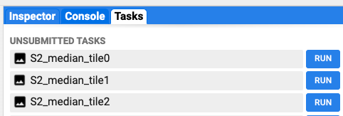

7 Advanced Topics
Although you now know the most basic fundamentals of Earth Engine, there is still much more that can be done. The Part presents some advanced topics that can help expand your skill set for doing larger and more complex projects. These include tools for sharing code among users, scaling up with efficient project design, creating apps for non-expert users, and combining R with other information processing platforms.
8 Advanced Raster Visualization
Overview
This chapter should help users of Earth Engine to better understand raster data by applying visualization algorithms such as hillshading, hill shadows, and custom colormaps. We will also learn how image collection datasets can be explored by animating them as well as by annotating with text labels, using, for example, attributes of images or values queried from images.
Learning Outcomes
- Understanding why perceptually uniform colormaps are better to present data and using them efficiently for raster visualization.
- Using palettes with images before and after remapping values.
- Adding text annotations when visualizing images or features.
- Animating image collections in multiple ways (animated GIFs, exporting video clips, interactive animations with UI controls).
- Adding hillshading and shadows to help visualize raster datasets.
Assumes you know how to:
- Import images and image collections, filter, and visualize (Part F1).
- Write a function and map it over an ImageCollection (Chap. F4.0).
- Inspect an Image and an ImageCollection, as well as their properties (Chap. F4.1).
Introduction
Visualization is the step to transform data into a visual representation. You make a visualization as soon as you add your first layer to your map in Google Earth Engine. Sometimes you just want to have a first look at a dataset during the exploration phase. But as you move towards the dissemination phase, where you want to spread your results, it is good to think about a more structured approach to visualization. A typical workflow for creating visualization consists of the following steps:
- Defining the story (what is the message?)
- Finding inspiration (for example by making a moodboard)
- Choosing a canvas/medium (here, this is the Earth Engine map canvas)
- Choosing datasets (co-visualized or combined using derived indicators)
- Data preparation (interpolating in time and space, filtering/mapping/reducing)
- Converting data into visual elements (shape and color)
- Adding annotations and interactivity (labels, scales, legend, zoom, time slider)
A good standard work on all the choices that one can make while creating a visualization is provided by the Grammar of Graphics (GoG) by Wilkinson (1999). It was the inspiration behind many modern visualization libraries (ggplot, vega). The main concept is that you can subdivide your visualization into several aspects.
In this chapter, we will cover several aspects mentioned in the Grammar of Graphics to convert (raster) data into visual elements. The accurate representation of data is essential in science communication. However, color maps that visually distort data through uneven color gradients or are unreadable to those with color-vision deficiency remain prevalent in science (Crameri, 2020). You will also learn how to add annotation text and symbology, while improving your visualizations by mixing images with hillshading as you explore some of the amazing datasets that have been collected in recent years in Earth Engine.
8.1 Palettes
In this section we will explore examples of colormaps to visualize raster data. Colormaps translate values to colors for display on a map. This requires a set of colors (referred to as a “palette” in Earth Engine) and a range of values to map (specified by the min and max values in the visualization parameters).
There are multiple types of colormaps, each used for a different purpose. These include the following:
Sequential: These are probably the most commonly used colormaps, and are useful for ordinal, interval, and ratio data. Also referred to as a linear colormap, a sequential colormap looks like the viridis colormap (Fig. F6.0.1) from matplotlib. It is popular because it is a perceptual uniform colormap, where an equal interval in values is mapped to an equal interval in the perceptual colorspace. If you have a ratio variable where zero means nothing, you can use a sequential colormap starting at white, transparent, or, when you have a black background, at black—for example, the turku colormap from Crameri (Fig. F6.0.1). You can use this for variables like population count or gross domestic product.
Diverging: This type of colormap is used for visualizing data where you have positive and negative values and where zero has a meaning. Later in this tutorial, we will use the balance colormap from the cmocean package (Fig. F6.0.1) to show temperature change.
Circular: Some variables are periodic, returning to the same value after a period of time. For example, the season, angle, and time of day are typically represented as circular variables. For variables like this, a circular colormap is designed to represent the first and last values with the same color. An example is the circular cet-c2 colormap (Fig. F6.0.1) from the colorcet package.
Semantic: Some colormaps do not map to arbitrary colors but choose colors that provide meaning. We refer to these as semantic colormaps. Later in this tutorial, we will use the ice colormap (Fig. F6.0.1) from the cmocean package for our ice example.

Fig. F6.0.1 Examples of colormaps from a variety of packages: viridis from matplotlib, turku from Crameri, balance from cmocean, cet-c2 from colorcet and ice from cmocean
Popular sources of colormaps include:
- cmocean (semantic perceptual uniform colormaps for geophysical applications)
- colorcet (set of perceptual colormaps with varying colors and saturation)
- cpt-city (comprehensive overview of colormaps,
- colorbrewer (colormaps with variety of colors)
- Crameri (stylish colormaps for dark and light themes)
Our first example in this section applies a diverging colormap to temperature.
// Load the ERA5 reanalysis monthly means.
var era5 = ee.ImageCollection(‘ECMWF/ERA5_LAND/MONTHLY’);
// Load the palettes package.
var palettes = require(‘users/gena/packages:palettes’);
// Select temperature near ground.
era5 = era5.select(‘temperature_2m’);
Now we can visualize the data. Here we have a temperature difference. That means that zero has a special meaning. By using a divergent colormap we can give zero the color white, which denotes that there is no significant difference. Here we will use the colormap Balance from the cmocean package. The color red is associated with warmth, and the color blue is associated with cold. We will choose the minimum and maximum values for the palette to be symmetric around zero (-2, 2) so that white appears in the correct place. For comparison we also visualize the data with a simple [‘blue’, ‘white’, ‘red’] palette. As you can see (Fig. F6.0.2), the Balance colormap has a more elegant and professional feel to it, because it uses a perceptual uniform palette and both saturation and value.
// Choose a diverging colormap for anomalies.
var balancePalette = palettes.cmocean.Balance[7];
var threeColorPalette = [‘blue’, ‘white’, ‘red’];
// Show the palette in the Inspector window.
palettes.showPalette(‘temperature anomaly’, balancePalette);
palettes.showPalette(‘temperature anomaly’, threeColorPalette);
// Select 2 time windows of 10 years.
var era5_1980 = era5.filterDate(‘1981-01-01’, ‘1991-01-01’).mean();
var era5_2010 = era5.filterDate(‘2011-01-01’, ‘2020-01-01’).mean();
// Compute the temperature change.
var era5_diff = era5_2010.subtract(era5_1980);
// Show it on the map.
Map.addLayer(era5_diff, {
palette: threeColorPalette,
min: -2,
max: 2}, ‘Blue White Red palette’);
Map.addLayer(era5_diff, {
palette: balancePalette,
min: -2,
max: 2}, ‘Balance palette’);


Fig. F6.0.2 Temperature difference of ERA5 (2011–2020, 1981–1990) using the balance colormap from cmocean (right) versus a basic blue-white-red colormap (left)
Code Checkpoint F60a. The book’s repository contains a script that shows what your code should look like at this point.
Our second example in this section focuses on visualizing a region of the Antarctic, the Thwaites Glacier. This is one of the fast-flowing glaciers that causes concern because it loses so much mass that it causes the sea level to rise. If we want to visualize this region, we have a challenge. The Antarctic region is in the dark for four to five months each winter. That means that we can’t use optical images to see the ice flowing into the sea. We therefore will use radar images. Here we will use a semantic colormap to denote the meaning of the radar images.
Let’s start by importing the dataset of radar images. We will use the images from the Sentinel-1 constellation of the Copernicus program. This satellite uses a C-band synthetic-aperture radar and has near-polar coverage. The radar senses images using a polarity for the sender and receiver. The collection has images of four different possible combinations of sender/receiver polarity pairs. The image that we’ll use has a band of the Horizontal/Horizontal polarity (HH).
// An image of the Thwaites glacier.
var imageId =‘COPERNICUS/S1_GRD/S1B_EW_GRDM_1SSH_20211216T041925_20211216T042029_030045_03965B_AF0A’;
// Look it up and select the HH band.
var img = ee.Image(imageId).select(‘HH’);
For the next step, we will use the palette library. We will stylize the radar images to look like optical images, so that viewers can contrast ice and sea ice from water (Lhermitte, 2020). We will use the Ice colormap from the cmocean package (Thyng, 2016).
// Use the palette library.
var palettes = require(‘users/gena/packages:palettes’);
// Access the ice palette.
var icePalette = palettes.cmocean.Ice[7];
// Show it in the console.
palettes.showPalette(‘Ice’, icePalette);
// Use it to visualize the radar data.
Map.addLayer(img, {
palette: icePalette,
min: -15,
max: 1}, ‘Sentinel-1 radar’);
// Zoom to the grounding line of the Thwaites Glacier.
Map.centerObject(ee.Geometry.Point([-105.45882094907664, - 74.90419580705336]), 8);
If you zoom in (F6.0.3) you can see how long cracks have recently appeared near the pinning point (a peak in the bathymetry that functions as a buttress, see Wild, 2022) of the glacier.

Fig. F6.0.3. Ice observed in Antarctica by the Sentinel-1 satellite. The image is rendered using the ice color palette stretched to backscatter amplitude values [-15; 1].
Code Checkpoint F60b. The book’s repository contains a script that shows what your code should look like at this point.
8.2 Remapping and Palettes
Classified rasters in Earth Engine have metadata attached that can help with analysis and visualization. This includes lists of the names, values, and colors associated with class. These are used as the default color palette for drawing a classification, as seen next. The USGS National Land Cover Database (NLCD) is one such example. Let’s access the NLCD dataset, name it nlcd, and view it (Fig. F6.0.4) with its built-in palette.
// Advanced remapping using NLCD.
// Import NLCD.
var nlcd = ee.ImageCollection(‘USGS/NLCD_RELEASES/2016_REL’);
// Use Filter to select the 2016 dataset.
var nlcd2016 = nlcd.filter(ee.Filter.eq(‘system:index’, ‘2016’))
.first();
// Select the land cover band.
var landcover = nlcd2016.select(‘landcover’);
// Map the NLCD land cover.
Map.addLayer(landcover, null, ‘NLCD Landcover’);

Fig. F6.0.4 The NLCD visualized with default colors for each class
But suppose you want to change the display palette. For example, you might want to have multiple classes displayed using the same color, or use different colors for some classes. Let’s try having all three urban classes display as dark red (‘ab0000’).
// Now suppose we want to change the color palette.
var newPalette = [‘466b9f’, ‘d1def8’, ‘dec5c5’, ‘ab0000’, ‘ab0000’, ‘ab0000’, ‘b3ac9f’, ‘68ab5f’, ‘1c5f2c’, ‘b5c58f’, ‘af963c’, ‘ccb879’, ‘dfdfc2’, ‘d1d182’, ‘a3cc51’, ‘82ba9e’, ‘dcd939’, ‘ab6c28’, ‘b8d9eb’, ‘6c9fb8’
];
// Try mapping with the new color palette.
Map.addLayer(landcover, {
palette: newPalette
}, ‘NLCD New Palette’);
However, if you map this, you will see an unexpected result (Fig. F6.0.5).

Fig. F6.0.5 Applying a new palette to a multi-class layer has some unexpected results
This is because the numeric codes for the different classes are not sequential. Thus, Earth Engine stretches the given palette across the whole range of values and produces an unexpected color palette. To fix this issue, we will create a new index for the class values so that they are sequential.
// Extract the class values and save them as a list.
var values = ee.List(landcover.get(‘landcover_class_values’));
// Print the class values to console.
print(‘raw class values’, values);
// Determine the maximum index value
var maxIndex = values.size().subtract(1);
// Create a new index for the remap
var indexes = ee.List.sequence(0, maxIndex);
// Print the updated class values to console.
print(‘updated class values’, indexes);
// Remap NLCD and display it in the map.
var colorized = landcover.remap(values, indexes)
.visualize({
min: 0,
max: maxIndex,
palette: newPalette
});
Map.addLayer(colorized, {}, ‘NLCD Remapped Colors’);
Using this remapping approach, we can properly visualize the new color palette (Fig. F6.0.6).

Fig. F6.0.6 Expected results of the new color palette. All urban areas are now correctly showing as dark red and the other land cover types remain their original color.
Code Checkpoint F60c. The book’s repository contains a script that shows what your code should look like at this point.
8.3 Annotations
Annotations are the way to visualize data on maps to provide additional information about raster values or any other data relevant to the context. In this case, this additional information is usually shown as geometries, text labels, diagrams, or other visual elements. Some annotations in Earth Engine can be added by making use of the ui portion of the Earth Engine API, resulting in graphical user interface elements such as labels or charts added on top of the map. However, it is frequently useful to render annotations as a part of images, such as by visualizing various image properties or to highlight specific areas.
In many cases, these annotations can be mixed with output images generated outside of Earth Engine, for example, by post-processing exported images using Python libraries or by annotating using GIS applications such as QGIS or ArcGIS. However, annotations could also be also very useful to highlight and/or label specific areas directly within the Code Editor. Earth Engine provides a sufficiently rich API to turn vector features and geometries into raster images which can serve as annotations. We recommend checking the ee.FeatureCollection.style function in the Earth Engine documentation to learn how geometries can be rendered.
For textual annotation, we will make use of an external package ‘users/gena/packages:text’ that provides a way to render strings into raster images directly using the Earth Engine raster API. It is beyond the scope of the current tutorials to explain the implementation of this package, but internally this package makes use of bitmap fonts which are ingested into Earth Engine as raster assets and are used to turn every character of a provided string into image glyphs, which are then translated to desired coordinates.
The API of the text package includes the following mandatory and optional arguments:
/**
* Draws a string as a raster image at a given point.
*
* (param?) {string} str - string to draw
* (param?) {ee.Geometry} point - location the the string will be drawn
* (param?) {{string, Object}} options - optional properties used to style text
*
* The options dictionary may include one or more of the following:
* fontSize - 16|18|24|32 - the size of the font (default: 16)
* fontType - Arial|Consolas - the type of the font (default: Arial)
* alignX - left|center|right (default: left)
* alignY - top|center|bottom (default: top)
* textColor - text color string (default: ffffff - white)
* textOpacity - 0-1, opacity of the text (default: 0.9)
* textWidth - width of the text (default: 1)
* outlineColor - text outline color string (default: 000000 - black)
* outlineOpacity - 0-1, opacity of the text outline (default: 0.4)
* outlineWidth - width of the text outlines (default: 0)
*/
To demonstrate how to use this API, let’s render a simple ‘Hello World!’ text string placed at the map center using default text parameters. The code for this will be:
// Include the text package.
var text = require(‘users/gena/packages:text’);
// Configure map (change center and map type).
Map.setCenter(0, 0, 10);
Map.setOptions(‘HYBRID’);
// Draw text string and add to map.
var pt = Map.getCenter();
var scale = Map.getScale();
var image = text.draw(‘Hello World!’, pt, scale);
Map.addLayer(image);
Running the above script will generate a new image containing the ‘Hello World!’ string placed in the map center. Notice that before calling the text.draw() function we configure the map to be centered at specific coordinates (0,0) and zoom level 10 because map parameters such as center and scale are passed as arguments to that text.draw() function. This ensures that the resulting image containing string characters is scaled properly.
When exporting images containing rendered text strings, it is important to use proper scale to avoid distorted text strings that are difficult to read, depending on the selected font size, as shown in Fig. 6.0.7.
Code Checkpoint F60d. The book’s repository contains a script that shows what your code should look like at this point.


Fig. 6.0.7 Results of the text.draw call, scaled to 1x: var scale = Map.getScale()1; (left), 2x: var scale = Map.getScale()2; (center), and 0.5x: var scale = Map.getScale()*0.5; (right)
These artifacts can be avoided to some extent by specifying a larger font size (e.g., 32). However, it is better to render text at the native 1:1 scale to achieve best results. The same applies to the text color and outline: They may need to be adjusted to achieve the best result. Usually, text needs to be rendered using colors that have opposite brightness and colors when compared to the surrounding background. Notice that in the above example, the map was configured to have a dark background (‘HYBRID’) to ensure that the white text (default color) would be visible. Multiple parameters listed in the above API documentation can be used to adjust text rendering. For example, let’s switch font size, font type, text, and outline parameters to render the same string, as below. Replace the existing one-line text.draw call in your script with the following code, and then run it again to see the difference (Fig. F6.0.8):
var image = text.draw(‘Hello World!’, pt, scale, {
fontSize: 32,
fontType: ‘Consolas’,
textColor: ‘black’,
outlineColor: ‘white’,
outlineWidth: 1,
outlineOpacity: 0.8
});
// Add the text image to the map.
Map.addLayer(image);
Code Checkpoint F60e. The book’s repository contains a script that shows what your code should look like at this point.

Fig. 6.0.8 Rendering text with adjusted parameters (font type: Consolas, fontSize: 32, textColor: ‘black’, outlineWidth: 1, outlineColor: ‘white’, outlineOpacity: 0.8)
Of course, non-optional parameters such as pt and scale, as well as the text string, do not have to be hard-coded in the script; instead, they can be acquired by the code using, for example, properties coming from a FeatureCollection. Let’s demonstrate this by showing the cloudiness of Landsat 8 images as text labels rendered in the center of every image. In addition to annotating every image with a cloudiness text string, we will also draw yellow outlines to indicate image boundaries. For convenience, we can also define the code to annotate an image as a function. We will then map that function (as described in Chap. F4.0) over the filtered ImageCollection. The code is as follows:
var text = require(‘users/gena/packages:text’);
var geometry = ee.Geometry.Polygon(
[
[
[-109.248, 43.3913],
[-109.248, 33.2689],
[-86.5283, 33.2689],
[-86.5283, 43.3913]
]
], null, false);
Map.centerObject(geometry, 6);
function annotate(image) { // Annotates an image by adding outline border and cloudiness // Cloudiness is shown as a text string rendered at the image center. // Add an edge around the image. var edge = ee.FeatureCollection([image])
.style({
color: ‘cccc00cc’,
fillColor: ‘00000000’ }); // Draw cloudiness as text. var props = {
textColor: ‘0000aa’,
outlineColor: ‘ffffff’,
outlineWidth: 2,
outlineOpacity: 0.6,
fontSize: 24,
fontType: ‘Consolas’ }; var center = image.geometry().centroid(1); var str = ee.Number(image.get(‘CLOUD_COVER’)).format(‘%.2f’); var scale = Map.getScale(); var textCloudiness = text.draw(str, center, scale, props); // Shift left 25 pixels. textCloudiness = textCloudiness
.translate(-scale * 25, 0, ‘meters’, ‘EPSG:3857’); // Merge results. return ee.ImageCollection([edge, textCloudiness]).mosaic();
}
// Select images.
var images = ee.ImageCollection(‘LANDSAT/LC08/C02/T1_RT_TOA’)
.select([5, 4, 2])
.filterBounds(geometry)
.filterDate(‘2018-01-01’, ‘2018-01-7’);
// dim background.
Map.addLayer(ee.Image(1), {
palette: [‘black’]
}, ‘black’, true, 0.5);
// Show images.
Map.addLayer(images, {
min: 0.05,
max: 1,
gamma: 1.4}, ‘images’);
// Show annotations.
var labels = images.map(annotate);
var labelsLayer = ui.Map.Layer(labels, {}, ‘annotations’);
Map.layers().add(labelsLayer);
The result of defining and mapping this function over the filtered set of images is shown in Fig. F6.0.9. Notice that by adding an outline around the text, we can ensure the text is visible for both dark and light images. Earth Engine requires casting properties to their corresponding value type, which is why we’ve used ee.Number (as described in Chap. F1.0) before generating a formatted string. Also, we have shifted the resulting text image 25 pixels to the left. This was necessary to ensure that the text is positioned properly. In more complex text rendering applications, users may be required to compute the text position in a different way using ee.Geometry calls from the Earth Engine API: for example, by positioning text labels somewhere near the corners.

Fig. F6.0.9 Annotating Landsat 8 images with image boundaries, border, and text strings indicating cloudiness
Because we render text labels using the Earth Engine raster API, they are not automatically scaled depending on map zoom size. This may cause unwanted artifacts; To avoid that, the text labels image needs to be updated every time the map zoom changes. To implement this in a script, we can make use of the Map API—in particular, the Map.onChangeZoom event handler. The following code snippet shows how the image containing text annotations can be re-rendered every time the map zoom changes. Add it to the end of your script.
// re-render (rescale) annotations when map zoom changes.
Map.onChangeZoom(function(zoom) {
labelsLayer.setEeObject(images.map(annotate));
});
Code Checkpoint F60f. The book’s repository contains a script that shows what your code should look like at this point.
Try commenting that event handler and observe how annotation rendering changes when you zoom in or zoom out.
8.4 Animations
Visualizing raster images as animations is a useful technique to explore changes in time-dependent datasets, but also, to render short animations to communicate how changing various parameters affects the resulting image—for example, varying thresholds of spectral indices resulting in different binary maps or the changing geometry of vector features.
Animations are very useful when exploring satellite imagery, as they allow viewers to quickly comprehend dynamics of changes of earth surface or atmospheric properties. Animations can also help to decide what steps should be taken next to designing a robust algorithm to extract useful information from satellite image time series. Earth Engine provides two standard ways to generate animations: as animated GIFs, and as AVI video clips. Animation can also be rendered from a sequence of images exported from Earth Engine, using numerous tools such as ffmpeg or moviepy. However, in many cases it is useful to have a way to quickly explore image collections as animation without requiring extra steps.
In this section, we will generate animations in three different ways:
- Generate animated GIF
- Export video as an AVI file to Google Drive
- Animate image collection interactively using UI controls and map layers
We will use an image collection showing sea ice as an input dataset to generate animations with visualization parameters from earlier. However, instead of querying a single Sentinel-1 image, let’s generate a filtered image collection with all images intersecting with our area of interest. After importing some packages and palettes and defining a point and rectangle, we’ll build the image collection. Here we will use point geometry to define the location where the image date label will be rendered and the rectangle geometry to indicate the area of interest for the animation. To do this we will build the following logic in a new script. Open a new script and paste the following code into it:
// Include packages.
var palettes = require(‘users/gena/packages:palettes’);
var text = require(‘users/gena/packages:text’);
var point = /* color: #98ff00 */ ee.Geometry.Point([- 106.15944300895228, -74.58262940096245
]);
var rect = /* color: #d63000 */ ee.Geometry.Polygon(
[
[
[-106.19789515738981, -74.56509549360152],
[-106.19789515738981, -74.78071448733921],
[-104.98115931754606, -74.78071448733921],
[-104.98115931754606, -74.56509549360152]
]
], null, false);
// Lookup the ice palette.
var palette = palettes.cmocean.Ice[7];
// Show it in the console.
palettes.showPalette(‘Ice’, palette);
// Center map on geometry.
Map.centerObject(point, 9);
// Select S1 images for the Thwaites glacier.
var images = ee.ImageCollection(‘COPERNICUS/S1_GRD’)
.filterBounds(rect)
.filterDate(‘2021-01-01’, ‘2021-03-01’)
.select(‘HH’) // Make sure we include only images which fully contain the region geometry. .filter(ee.Filter.isContained({
leftValue: rect,
rightField: ‘.geo’ }))
.sort(‘system:time_start’);
// Print number of images.
print(images.size());
As you see from the last last lines of the above code, it is frequently useful to print the number of images in an image collection: an example of what’s often known as a “sanity check.”
Here we have used two custom geometries to configure animations: the green pin named point, used to filter image collection and to position text labels drawn on top of the image, and the blue rectangle rect, used to define a bounding box for the exported animations. To make sure that the point and rectangle geometries are shown under the Geometry Imports in the Code Editor, you need to click on these variables in the code and then select the Convert link.
Notice that in addition to the bounds and date filter, we have also used a less known isContained filter to ensure that we get only images that fully cover our region. To better understand this filter, you could try commenting out the filter and compare the differences, observing images with empty (masked) pixels in the resulting image collection.
Code Checkpoint F60g. The book’s repository contains a script that shows what your code should look like at this point.
Next, to simplify the animation API calls, we will generate a composite RGB image collection out of satellite images and draw the image’s acquisition date as a label on every image, positioned within our region geometry.
// Render images.
var vis = {
palette: palette,
min: -15,
max: 1
};
var scale = Map.getScale();
var textProperties = {
outlineColor: ‘000000’,
outlineWidth: 3,
outlineOpacity: 0.6
};
var imagesRgb = images.map(function(i) { // Use the date as the label. var label = i.date().format(‘YYYY-MM-dd’); var labelImage = text.draw(label, point, scale,
textProperties); return i.visualize(vis)
.blend(labelImage) // Blend label image on top. .set({
label: label
}); // Keep the text property.
});
Map.addLayer(imagesRgb.first());
Map.addLayer(rect, {color:‘blue’}, ‘rect’, 1, 0.5);
In addition to printing the size of the ImageCollection, we also often begin by adding a single image to the map from a mapped collection to see that everything works as expected—another example of a sanity check. The resulting map layer will look like F6.0.10.

Fig. F6.0.10 The results of adding the first layer from the RGB composite image collection showing Sentinel-1 images with a label blended on top at a specified location. The blue geometry is used to define the bounds for the animation to be exported.
Code Checkpoint F60h. The book’s repository contains a script that shows what your code should look like at this point.
Animation 1: Animated GIF with ui.Thumbnail
The quickest way to generate an animation in Earth Engine is to use the animated GIF API and either print it to the Console or print the URL to download the generated GIF. The following code snippet will result in an animated GIF as well as the URL to the animated GIF printed to Console. This is as shown in Fig. F6.0.11:
// Define GIF visualization parameters.
var gifParams = {
region: rect,
dimensions: 600,
crs: ‘EPSG:3857’,
framesPerSecond: 10
};
// Print the GIF URL to the console.
print(imagesRgb.getVideoThumbURL(gifParams));
// Render the GIF animation in the console.
print(ui.Thumbnail(imagesRgb, gifParams));
Earth Engine provides multiple options to specify the size of the resulting video. In this example we specify 600 as the size of the maximum dimension. We also specify the number of frames per second for the resulting animated GIF as well as the target projected coordinate system to be used (EPSG:3857 here, which is the projection used in web maps such as Google Maps and the Code Editor background).

Fig. F6.0.11 Console output after running the animated GIF code snippet, showing the GIF URL and an animation shown directly in the Console
Animation 2: Exporting an Animation with Export.video.toDrive
Animated GIFs can be useful to generate animations quickly. However, they have several limitations. In particular, they are limited to 256 colors, become large for larger animations, and most web players do not provide play controls when playing animated GIFs. To overcome these limitations, Earth Engine provides export of animations as video files in MP4 format. Let’s use the same RGB image collection we have used for the animated GIF to generate a short video. We can ask Earth Engine to export the video to the Google Drive using the following code snippet:
Export.video.toDrive({
collection: imagesRgb,
description: ‘ice-animation’,
fileNamePrefix: ‘ice-animation’,
framesPerSecond: 10,
dimensions: 600,
region: rect,
crs: ‘EPSG:3857’
});
Here, many arguments to the Export.video.toDrive function resemble the ones we’ve used in the ee.Image.getVideoThumbURL code above. Additional arguments include description and fileNamePrefix, which are required to configure the name of the task and the target file of the video file to be saved to Google Drive. Running the above code will result in a new task created under the Tasks tab in the Code Editor. Starting the export video task (F6.0.12) will result in a video file saved in the Google Drive once completed.

Fig. F6.0.12 A new export video tasks in the Tasks panel of the Code Editor
Animation 3: The Custom Animation Package
For the last animation example, we will use the custom package ‘users/gena/packages:animation’, built using the Earth Engine User Interface API. The main difference between this package and the above examples is that it generates an interactive animation by adding Map layers individually to the layer set, and providing UI controls that allow users to play animations or interactively switch between frames. The animate function in that package generates an interactive animation of an ImageCollection, as described below. This function has a number of optional arguments allowing you to configure, for example, the number of frames to be animated, the number of frames to be preloaded, or a few others. The optional parameters to control the function are the following:
- maxFrames: maximum number of frames to show (default: 30)
- vis: visualization parameters for every frame (default: {})
- Label: text property of images to show in the animation controls (default: undefined)
- width: width of the animation panel (default: ‘600px’)
- compact: show only play control and frame slider (default: false)
- position: position of the animation panel (default: ‘top-center’)
- timeStep: time step (ms) used when playing animation (default: 100)
- preloadCount: number of frames (map layers) to preload (default: all)
Let’s call this function to add interactive animation controls to the current Map:
// include the animation package
var animation = require(‘users/gena/packages:animation’);
// show animation controls
animation.animate(imagesRgb, {
label: ‘label’,
maxFrames: 50
});
Before using the interactive animation API, we need to include the corresponding package using require. Here we provide our pre-rendered image collection and two optional parameters (label and maxFrames). The first optional parameter label indicates that every image in our image collection has the ‘label’ text property. The animate function uses this property to name map layers as well as to visualize in the animation UI controls when switching between frames. This can be useful when inspecting image collections. The second optional parameter, maxFrames, indicates that the maximum number of animation frames that we would like to visualize is 50. To prevent the Code Editor from crashing, this parameter should not be too large: it is best to keep it below 100. For a much larger number of frames, it is better to use the Export video or animated GIF API. Running this code snippet will result in the animation control panel added to the map as shown in Fig. F6.0.13.
It is important to note that the animation API uses asynchronous UI calls to make sure that the Code Editor does not hang when running the script. The drawback of this is that for complex image collections, a large amount of processing is required. Hence, it may take some time to process all images and to visualize the interactive animation panel. The same is true for map layer names: they are updated once the animation panel is visualized. Also, map layers used to visualize individual images in the provided image collection may require some time to be rendered.

Fig. F6.0.13 Interactive animation controls when using custom animation API
The main advantage of the interactive animation API is that it provides a way to explore image collections at frame-by-frame basis, which can greatly improve our visual understanding of the changes captured in sets of images.
Code Checkpoint F60i. The book’s repository contains a script that shows what your code should look like at this point.
8.5 Terrain Visualization
This section introduces several raster visualization techniques useful to visualize terrain data such as:
- Basic hillshading and parameters (light azimuth, elevation)
- Combining elevation data and colors using HSV transform (Wikipedia: HSL and HSV)
- Adding shadows
One special type of raster data is data that represents height. Elevation data can include topography, bathymetry, but also other forms of height, such as sea surface height can be presented as a terrain.
Height is often visualized using the concept of directional light with a technique called hillshading. Because height is such a common feature in our environment, we also have an expectancy of how height is visualized. If height is visualized using a simple grayscale colormap, it looks very unnatural (Fig. F6.0.14, top left). By using hillshading, data immediately looks more natural (Fig. F6.0.14, top middle).
We can further improve the visualization by including shadows (Fig. F6.0.14, top right). A final step is to replace the simple grayscale colormap with a perceptual uniform topographic colormap and mix this with the hillshading and shadows (Fig. F6.0.14, bottom). This section explains how to apply these techniques.
We’ll focus on elevation data stored in raster form. Elevation data is not always stored in raster formats. Other data formats include Triangulated Irregular Network (TIN), which allows storing information at varying resolutions and as 3D objects. This format allows one to have overlapping geometries, such as bridges with a road below it. In raster-based digital elevation models, in contrast, there can only be one height recorded for each pixel.
Let’s start by loading data from a digital elevation model. This loads a topographic dataset from the Netherlands (Algemeen Hoogtebestand Nederland). It is a Digital Surface Model, based on airborne LIDAR measurements regridded to 0.5 m resolution. Enter the following code in a new script.
var dem = ee.Image(‘AHN/AHN2_05M_RUW’);
We can visualize this dataset using a sequential gradient colormap from black to white. This results in Fig. F6.0.14. One can infer which areas are lower and which are higher, but the visualization does not quite “feel” like a terrain.
// Change map style to HYBRID and center map on the Netherlands
Map.setOptions(‘HYBRID’);
Map.setCenter(4.4082, 52.1775, 18);
// Visualize DEM using black-white color palette
var palette = [‘black’, ‘white’];
var demRGB = dem.visualize({
min: -5,
max: 5,
palette: palette
});
Map.addLayer(demRGB, {},‘DEM’);
An important step to visualize terrain is to add shadows created by a distant point source of light. This is referred to as hillshading or a shaded relief map. This type of map became popular in the 1940s through the work of Edward Imhoff, who also used grayscale colormaps (Imhoff, 2015). Here we’ll use the ‘gena/packages:utils’ library to combine the colormap image with the shadows. That Earth Engine package implements a hillshadeRGB function to simplify rendering of images enhanced with hillshading and shadow effects. One important argument this function takes is the light azimuth—an angle from the image plane upward to the light source (the Sun). This should always be set to the top left to avoid bistable perception artifacts, in which the DEM can be misperceived as inverted.
var utils = require(‘users/gena/packages:utils’);
var weight = 0.4; // Weight of Hillshade vs RGB (0 - flat, 1 - hillshaded).
var exaggeration = 5; // Vertical exaggeration.
var azimuth = 315; // Sun azimuth.
var zenith = 20; // Sun elevation.
var brightness = -0.05; // 0 - default.
var contrast = 0.05; // 0 - default.
var saturation = 0.8; // 1 - default.
var castShadows = false;
var rgb = utils.hillshadeRGB(
demRGB, dem, weight, exaggeration, azimuth, zenith,
contrast, brightness, saturation, castShadows);
Map.addLayer(rgb, {}, ‘DEM (no shadows)’);
Standard hillshading only determines per pixel if it will be directed to the light or not. One can also project shadows on the map. That is done using the ee.Algorithms.HillShadow algorithm. Here we’ll turn on castShadows in the hillshadeRGB function. This results in a more realistic map, as can be seen in Figure F6.0.14.
var castShadows = true;
var rgb = utils.hillshadeRGB(
demRGB, dem, weight, exaggeration, azimuth, zenith,
contrast, brightness, saturation, castShadows);
Map.addLayer(rgb, {}, ‘DEM (with shadows)’);
The final step is to add a topographic colormap. To visualize topographic information, one often uses special topographic colormaps. Here we’ll use the oleron colormap from crameri. The colors get mixed with the shadows using the hillshadeRGB function. As you can see in Fig. F6.0.14, this gives a nice overview of the terrain. The area colored in blue is located below sea level.
var palettes = require(‘users/gena/packages:palettes’);
var palette = palettes.crameri.oleron[50];
var demRGB = dem.visualize({
min: -5,
max: 5,
palette: palette
});
var castShadows = true;
var rgb = utils.hillshadeRGB(
demRGB, dem, weight, exaggeration, azimuth, zenith,
contrast, brightness, saturation, castShadows);
Map.addLayer(rgb, {}, ‘DEM colormap’);
Steps to further improve a terrain visualization include using light sources from multiple directions. This allows the user to render terrain to appear more natural. In the real world light is often scattered by clouds and other reflections.
One can also use lights to emphasize certain regions. To use even more advanced lighting techniques one can use a raytracing engine, such as the R rayshader library, as discussed earlier in this chapter. The raytracing engine in the Blender 3D program is also capable of producing stunning terrain visualizations using physical-based rendering, mist, environment lights, and camera effects such as depth of field.


Figure F6.0.14 Hillshading with shadows
Steps in visualizing a topographic dataset:
- Top left, topography with grayscale colormap
- Top middle, topography with grayscale colormap and hillshading
- Top right, topography with grayscale colormap, hillshading, and shadows
- Bottom, topography with topographic colormap, hillshading, and shadows
Code Checkpoint F60j. The book’s repository contains a script that shows what your code should look like at this point.
Synthesis
To synthesize what you have learned in this chapter, you can do the following assignments.
Assignment 1. Experiment with different color palettes from the palettes library. Try combining palettes with image opacity (using ee.Image.updateMask call) to visualize different physical features (for example, hot or cold areas using temperature and elevation).
Assignment 2. Render multiple text annotations when generating animations using image collection. For example, show other image properties in addition to date or image statistics generated using regional reducers for every image.
Assignment 3. In addition to text annotations, try blending geometry elements (lines, polygons) to highlight specific areas of rendered images.
Conclusion
In this chapter we have learned about several techniques that can greatly improve visualization and analysis of images and image collections. Using predefined palettes can help to better comprehend and communicate Earth observation data, and combining with other visualization techniques such as hillshading and annotations can help to better understand processes studied with Earth Engine. When working with image collections, it is often very helpful to analyze their properties through time by visualizing them as animations. Usually, this step helps to better understand dynamics of the changes that are stored in image collections and to develop a proper algorithm to study these changes.
References
Burrough PA, McDonnell RA, Lloyd CD (2015) Principles of Geographical Information Systems. Oxford University Press
Crameri F, Shephard GE, Heron PJ (2020) The misuse of colour in science communication. Nat Commun 11:1–10. https://doi.org/10.1038/s41467-020-19160-7
Imhof E (2015) Cartographic Relief Presentation. Walter de Gruyter GmbH & Co KG
Lhermitte S, Sun S, Shuman C, et al (2020) Damage accelerates ice shelf instability and mass loss in Amundsen Sea Embayment. Proc Natl Acad Sci USA 117:24735–24741. https://doi.org/10.1073/pnas.1912890117
Thyng KM, Greene CA, Hetland RD, et al (2016) True colors of oceanography. Oceanography 29:9–13
Wikipedia (2022) Terrain cartography. https://en.wikipedia.org/wiki/Terrain_cartography#Shaded_relief. Accessed 1 Apr 2022
Wikipedia (2022) HSL and HSV. https://en.wikipedia.org/wiki/HSL_and_HSV. Accessed 1 Apr 2022
Wild CT, Alley KE, Muto A, et al (2022) Weakening of the pinning point buttressing Thwaites Glacier, West Antarctica. Cryosphere 16:397–417. https://doi.org/10.5194/tc-16-397-2022
Wilkinson L (2005) The Grammar of Graphics. Springer Verlag
9 Collaborating in Earth Engine with Scripts and Assets
Overview
Many users find themselves needing to collaborate with others in Earth Engine at some point. Students may need to work on a group project, people from different organizations might want to collaborate on research together, or people may want to share a script or an asset they created with others. This chapter will show you how to collaborate with others and share your work.
Learning Outcomes
- Understanding when it is important to share a script or asset.
- Understanding what roles and permission options are available.
- Sharing a script with others.
- Sharing an asset with others.
- Sharing an asset so it can be displayed in an app.
- Sharing a repository with others.
- Seeing who made changes to a script and what changes were made.
- Reverting to a previous version of a script.
- Using the require function to load modules.
- Creating a script to share as a module.
Assumes you know how to:
- Sign up for an Earth Engine account, open the Code Editor, and save your script (Chap. F1.0).
Introduction
Many people find themselves needing to share a script when they encounter a problem; they wish to share the script with someone else so they can ask a question. When this occurs, sharing a link to the script often suffices. The other person can then make comments or changes before sending a new link to the modified script.
If you have included any assets from the Asset Manager in your script, you will also need to share these assets in order for your script to work for your colleague. The same goes for sharing assets to be displayed in an app.
Another common situation involves collaborating with others on a project. They may have some scripts they have written that they want to reuse or modify for the new project. Alternatively, several people might want to work on the same script together. For this situation, sharing a repository would be the best way forward; team members will be able to see who made what changes to a script and even revert to a previous version.
If you or your group members find yourselves repeatedly reusing certain functions for visualization or for part of your analysis, you could use the require module to call that function instead of having to copy and paste it into a new script each time. You could even make this function or module available to others to use via require.
Let’s get started. For this lab, you will need to work in small groups or pairs.
9.2 Sharing Assets from Your Asset Manager
When you clicked the Get Link button earlier, you may have noticed a note in the popup reading: “To give others access to assets in the code snapshot, you may need to share them.” If your script uses an asset that you have uploaded into your Asset Manager, you will need to share that asset as well. If not, an error message will appear when the person you shared the script with tries to run it.
Before sharing an asset, think about whether you have permission to share it. Is this some data that is owned by you, or did you get it from somewhere else? Do you need permission to share this asset? Make sure you have the permission to share an asset before doing so.
Now, let’s practice sharing assets. First, navigate to your Asset Manager by clicking on the Assets tab in the left panel. If you already have some assets uploaded, pick one that you have permission to share. If not, upload one to your Asset Manager. If you don’t have a shapefile or raster to upload, you can upload a small text file. Consult the Earth Engine documentation for how to do this; it will take only a few steps.
Hover your cursor over that asset in your Asset Manager. The asset gets highlighted in gray and three buttons appear to the right of the asset. Click on the first button from the left (outlined in red in Fig. F6.1.1). This icon means “share.”

Fig. F6.1.1 Three assets in the Asset Manager
After you click the share button, a Share Image popup will appear (Fig. F6.1.2). This popup contains information about the path of the asset and the email address of the owner. The owner of the asset can decide who can view and edit the asset.
Click on the dropdown menu outlined in red in Fig. F6.1.2. You will see two options for permissions: Reader and Writer. A Reader can view the asset, while a Writer can both view and make changes to it. For example, a Writer could add a new image to an ImageCollection. A Writer can also add other people to view or edit the asset, and a Writer can delete the asset. When in doubt, give someone the Reader role rather than the Writer role.

Fig. F6.1.2 The Share Image popup window
To share an asset with someone, you can type their email address into the Email or domain text field, choose Reader or Writer in the dropdown menu, and then click on Add Access. You can also share an asset with everyone with a certain email domain, which is useful if you want to share an asset with everyone in your organization, for instance.
If you want to share reading access publicly, then check the box that says Anyone can read. Note that you still need to share the link to the asset in order for others to access it. The only exceptions to this are when you are using the asset in a script and sharing that script using the Get Link button or when you share the asset with an Earth Engine app. To do the latter, use the Select an app dropdown menu (outlined in orange in Fig. F6.1.2) and click Add App Access.
Question 3. Share an asset with a group member and give them reader access. Send them the link to that asset. You will also receive a link from someone else in your group. Open that link. What can you do with that asset? What do you need to do to import it into a script?
Answer: You can view details about the asset and import it for use in a script in the Code Editor. To import the asset, click on the blue Import button.
Question 4. Share an asset with a group member and give them writer access. Send them the link to that asset. You will also receive a link from someone else in your group. Open that link. What can you do with that asset? Try sharing the asset with a different group member.
Answer: You can view details about the asset and import it for use in a script in the Code Editor. You can also share the asset with others and delete the asset.
9.3 Working with Shared Repositories
Now that you know how to share assets and scripts, let’s move on to sharing repositories. In this section, you will learn about different types of repositories and how to add a repository that someone else shared with you. You will also learn how to view previous versions of a script and how to revert back to an earlier version.
Earlier, we learned how to share a script using the Get Link button. This link shares a code snapshot from a script. This snapshot does not reflect any changes made to the script after the time the link was shared. If you want to share a script that updates to reflect the most current version when it is opened, you need to share a repository with that script instead.
If you look under the Scripts tab of the leftmost panel in the Code Editor, you will see that the first three categories are labeled Owner, Reader, and Writer.
- Repositories categorized under Owner are created and owned by you. No one else has access to view or make changes to them until you share these repositories.
- Repositories categorized under Reader are repositories to which you have reader access. You can view the scripts but not make any changes to them. If you want to make any changes, you will need to save the script as a new file in a repository that you own.
- Repositories categorized under Writer are repositories to which you have writer access. This means you can view and make changes to the scripts.
Let’s practice creating and sharing repositories. We will start by making a new repository. Click on the red New button located in the left panel. Select Repository from the dropdown menu. A New repository popup window will open (Fig. F6.1.3).

Fig. F6.1.3 The New repository popup window
In the popup window’s text field, type a name for your new repository, such as “ForSharing1,” then click on the blue Create button. You will see the new repository appear under the Owner category in the Scripts tab (Fig. F6.1.4).
Now, share this new repository with your group members: Hover your cursor over the repository you want to share. The repository gets highlighted in gray, and three buttons appear. Click on the Gear icon (outlined in red in Fig. F6.1.4).

Fig. F6.1.4 Three repositories under the Owner category
A Share Repo popup window appears (Fig. F6.1.5) which is very similar to the Share Image popup window we saw in Fig. F6.1.2. The method for sharing a repository with a specific user or the general public is the same as for sharing assets.
Type the email address of a group member in the Email or domain text field and give this person a writer role by selecting Writer in the dropdown menu, then click on Add Access.

Fig. F6.1.5. The Share Repo popup window
Your group member should receive an email inviting them to edit the repository. Check your email inbox for the repository that your group member has shared with you. When you open that email, you will see content similar to what is shown in Fig. F6.1.6.

Fig. F6.1.6 The “Invitation to edit” email
Now, click on the blue button that says Add [repository path] to your Earth Engine Code Editor. You will find the new repository added to the Writer category in your Scripts tab. The repository path will contain the username of your group member, such as users/username/sharing.
Now, let’s add a script to the empty repository. Click on the red New button in the Scripts tab and select File from the dropdown menu. A Create file popup will appear, as shown in Fig. F6.1.7. Click on the gray arrow beside the default path to open a dropdown menu that will allow you to choose the path of the repository that your group member shared with you. Type a new File Name in the text field, such as “exercise,” then click on the blue OK button to create the file.

Fig. F6.1.7 The Create file popup window
A new file should now appear in the shared repository in the Writer category. If you don’t see it, click on the Refresh icon, which is to the right of the red New button in the Scripts tab.
Double-click on the new script in the shared repository to open it. Then, copy and paste the following code to your Code Editor.
print(‘The owner of this repository is GroupMemberName.’);
Replace GroupMemberName with the name of your group member, then click Save to save the script in the shared repository, which is under the Writer category.
Now, navigate to the repository under Owner which you shared with your group member. Open the new script which they just created by double-clicking it.
Add the following code below the line of code that you pasted earlier.
print(‘This script is shared with MyName.’);
Replace MyName with your name, then save the script.
Next, we will compare changes made to the script. Click on the Versions icon (outlined in red in Fig. F6.1.8).

Fig. F6.1.8 Changes made and previous versions of the script
A popup window will appear, titled Revision history, followed by the path of the script (Fig. F6.1.9). There are three columns of information below the title.
- The left column contains the dates on which changes have been made.
- The middle column contains the usernames of the people who made changes.
- The right column contains information about what changes were made.
The most recent version of the script is shown in the first row, while previous versions are listed in subsequent rows. (More advanced users may notice that this is actually a Git repository.)

Fig. F6.1.9 The Revision history popup window
If you hover your cursor over a row, the row will be highlighted in gray and a button labeled Compare will appear. Clicking on this button allows you to compare differences between the current version of the script and a previous version in a Version comparison popup window (Fig. F6.1.10).

Fig. F6.1.10 The Version comparison popup window
In the Version comparison popup, you will see text highlighted in two different colors. Text highlighted in red shows code that was present in the older version but is absent in the current version (the “latest commit”). Text highlighted in green shows code that is present in the current version but that was absent in the older version. Generally speaking, text highlighted in red has been removed in the current version and text highlighted in green has been added to the current version. Text that is not highlighted shows code that is present in both versions.
Question 5. What text, if any, is highlighted in red when you click on Compare in your “exercise” script?
Answer: No text is highlighted in red, because none was removed between the previous and current versions of the script.
Question 6. What text, if any, is highlighted in green when you click on Compare in your “exercise” script?
Answer: print(‘This script is shared with MyName.’);
Question 7. What happens when you click on the blue Revert button?
Answer: The script reverts to the previous version, in which the only line of code is
print(‘The owner of this repository is GroupMemberName.’);
9.4 Using the Require Function to Load a Module
In earlier chapters, you may have noticed that the require function allows you to reuse code that has already been written without having to copy and paste it into your current script. For example, you might have written a function for cloud masking that you would like to use in multiple scripts. Saving this function as a module enables you to share the code across your own scripts and with other people. Or you might discover a new module with capabilities you need written by other authors. This section will show you how to use the require function to create and share your own module or to load a module that someone else has shared.
The module we will use is ee-palettes, which enables users to visualize raster data using common specialized color palettes (Donchyts et al. 2019). (If you would like to learn more about using these color palettes, the ee-palettes module is described and illustrated in detail in Chap. F6.0.) The first step is to go to this link to accept access to the repository as a reader: https://code.earthengine.google.com/?accept_repo=users/gena/packages
Now, if you navigate to your Reader directory in the Code Editor, you should see a new repository called ‘users/gena/packages’ listed. Look for a script called ‘palettes’ and click on it to load it in your Code Editor.
If you scroll down, you will see that the script contains a nested series of dictionaries with lists of hexadecimal color specifications (as described in Chap. F2.1) that describe a color palette, as shown in the code block below. For example, the color palette named “Algae” stored in the cmocean variable consists of seven colors, ranging from dark green to light green (Fig. F6.1.11).
exports.cmocean = {
Thermal: { 7: [‘042333’, ‘2c3395’, ‘744992’, ‘b15f82’, ‘eb7958’, ‘fbb43d’, ‘e8fa5b’ ]
},
Haline: { 7: [‘2a186c’, ‘14439c’, ‘206e8b’, ‘3c9387’, ‘5ab978’, ‘aad85c’, ‘fdef9a’ ]
},
Solar: { 7: [‘331418’, ‘682325’, ‘973b1c’, ‘b66413’, ‘cb921a’, ‘dac62f’, ‘e1fd4b’ ]
},
Ice: { 7: [‘040613’, ‘292851’, ‘3f4b96’, ‘427bb7’, ‘61a8c7’, ‘9cd4da’, ‘eafdfd’ ]
},
Gray: { 7: [‘000000’, ‘232323’, ‘4a4a49’, ‘727171’, ‘9b9a9a’, ‘cacac9’, ‘fffffd’ ]
},
Oxy: { 7: [‘400505’, ‘850a0b’, ‘6f6f6e’, ‘9b9a9a’, ‘cbcac9’, ‘ebf34b’, ‘ddaf19’ ]
},
Deep: { 7: [‘fdfecc’, ‘a5dfa7’, ‘5dbaa4’, ‘488e9e’, ‘3e6495’, ‘3f396c’, ‘281a2c’ ]
},
Dense: { 7: [‘e6f1f1’, ‘a2cee2’, ‘76a4e5’, ‘7871d5’, ‘7642a5’, ‘621d62’, ‘360e24’ ]
},
Algae: { 7: [‘d7f9d0’, ‘a2d595’, ‘64b463’, ‘129450’, ‘126e45’, ‘1a482f’, ‘122414’ ]
},
…
}
Notice that the variable is named exports.cmocean. Adding exports to the name of a function or variable makes it available to other scripts to use, as it gets added to a special global variable (Chang 2017).

Fig. F6.1.11 Some of the color palettes from the ee-palettes GitHub repository
To see all the color palettes available in this module, go to https://github.com/gee-community/ee-palettes.
Now let’s try using the ee-palettes module. Look for a script in the same repository called ‘palettes-test’ and click on it to load it in your Code Editor. When you run the script, you will see digital elevation data from the National Aeronautics and Space Administration Shuttle Radar Topography Mission satellite visualized using two palettes, colorbrewer.Blues and cmocean.Algae. The map will have two layers that show the same data with different palettes.
The script first imports the digital elevation model data in the Imports section of the Code Editor.
var dem = ee.Image(‘USGS/SRTMGL1_003’);
The script then loads the ee-palettes module by using the require function. The path to the module, ‘users/gena/packages:palettes’, is passed to the function. The require function is then stored in a variable named ‘palettes’, which will be used later to obtain the palettes for data visualization.
var palettes = require(‘users/gena/packages:palettes’);
As described by Donchyts et al. (2019), “Each palette is defined by a group and a name, which are separated by a period (JS object dot notation), and a color level. To retrieve a desired palette, use JS object notation to specify the group, name, and number of color levels.” We define the color palette Algae as palettes.cmocean.Algae[7] because it is part of the group cmocean and has 7 color levels. In the next code block, you can see that the palettes (i.e., lists of hex colors) have been defined for use by setting them as the value for the palette key in the visParams object supplied to the Map.addLayer function.
// colorbrewer
Map.addLayer(dem, {
min: 0,
max: 3000,
palette: palettes.colorbrewer.Blues[9]
}, ‘colorbrewer Blues[9]’);
// cmocean
Map.addLayer(dem, {
min: 0,
max: 3000,
palette: palettes.cmocean.Algae[7]
}, ‘cmocean Algae[7]’);
Question 8. Try adding a third layer to the Map with a different color palette from ee-palettes. How easy was it to do?
Now that you have loaded and used a module shared by someone else, you can try your hand at creating your own module and sharing it with someone else in your group. First, go to the shared repository that you created in Sect. 3, create a new script in that repository, and name it “cloudmasking.”
Then, go to the Examples repository at the bottom of the Scripts tab and select a function from the Cloud Masking repository. Let’s use the Landsat8 Surface Reflectance cloud masking script as an example. In that script, you will see the code shown in the block below. Copy all of it into your empty script.
// This example demonstrates the use of the Landsat 8 Collection 2, Level 2
// QA_PIXEL band (CFMask) to mask unwanted pixels.
function maskL8sr(image) { // Bit 0 - Fill // Bit 1 - Dilated Cloud // Bit 2 - Cirrus // Bit 3 - Cloud // Bit 4 - Cloud Shadow var qaMask = image.select(‘QA_PIXEL’).bitwiseAnd(parseInt(‘11111’, 2)).eq(0); var saturationMask = image.select(‘QA_RADSAT’).eq(0); // Apply the scaling factors to the appropriate bands. var opticalBands = image.select(‘SR_B.’).multiply(0.0000275).add(- 0.2); var thermalBands = image.select(’ST_B.*’).multiply(0.00341802)
.add(149.0); // Replace the original bands with the scaled ones and apply the masks. return image.addBands(opticalBands, null, true)
.addBands(thermalBands, null, true)
.updateMask(qaMask)
.updateMask(saturationMask);
}
// Map the function over one year of data.
var collection = ee.ImageCollection(‘LANDSAT/LC08/C02/T1_L2’)
.filterDate(‘2020-01-01’, ‘2021-01-01’)
.map(maskL8sr);
var composite = collection.median();
// Display the results.
Map.setCenter(-4.52, 40.29, 7); // Iberian Peninsula
Map.addLayer(composite, {
bands: [‘SR_B4’, ‘SR_B3’, ‘SR_B2’],
min: 0,
max: 0.3
});
Note that this code is well commented and has a header that describes what the script does. Don’t forget to comment your code and describe what you are doing each step of the way. This is a good practice for collaborative coding and for your own future reference.
Imagine that you changed this maskL8sr function slightly for some reason and want to make it available to other users and scripts. To do that, you can turn the function into a module. Copy and modify the code from the example code into the new script you created called “cloudmasking.” (Hint: Store the function in a variable starting with exports. Be careful that you don’t accidentally use Export, which is used to export datasets.)
Your script should be similar to the following code.
exports.maskL8sr = function(image) { // Bit 0 - Fill // Bit 1 - Dilated Cloud // Bit 2 - Cirrus // Bit 3 - Cloud // Bit 4 - Cloud Shadow var qaMask = image.select(‘QA_PIXEL’).bitwiseAnd(parseInt( ‘11111’, 2)).eq(0); var saturationMask = image.select(‘QA_RADSAT’).eq(0); // Apply the scaling factors to the appropriate bands. var opticalBands = image.select(‘SR_B.’).multiply(0.0000275)
.add(-0.2); var thermalBands = image.select(’ST_B.*’).multiply(0.00341802)
.add(149.0); // Replace the original bands with the scaled ones and apply the masks. return image.addBands(opticalBands, null, true)
.addBands(thermalBands, null, true)
.updateMask(qaMask)
.updateMask(saturationMask);
}
Next, you will create a test script that makes use of the cloud masking module you just made. Begin by creating a new script in your shared repository called “cloudmasking-test.” You can modify the last part of the example cloud masking script to use your module.
// Map the function over one year of data.
var collection = ee.ImageCollection(‘LANDSAT/LC08/C02/T1_L2’)
.filterDate(‘2020-01-01’, ‘2021-01-01’)
.map(maskL8sr);
var composite = collection.median();
// Display the results.
Map.setCenter(-4.52, 40.29, 7); // Iberian Peninsula
Map.addLayer(composite, {
bands: [‘SR_B4’, ‘SR_B3’, ‘SR_B2’],
min: 0,
max: 0.3
});
Question 9. How will you modify the cloud masking script to use your module? What does the script look like?
Answer: Your code might look something like the code block below.
// Load the module
var myCloudFunctions = require( ‘users/myusername/my-shared-repo:cloudmasking’);
// Map the function over one year of data.
var collection = ee.ImageCollection(‘LANDSAT/LC08/C02/T1_L2’)
.filterDate(‘2020-01-01’, ‘2021-01-01’)
.map(myCloudFunctions.maskL8sr);
var composite = collection.median();
// Display the results.
Map.setCenter(-4.52, 40.29, 7); // Iberian Peninsula
Map.addLayer(composite, {
bands: [‘SR_B4’, ‘SR_B3’, ‘SR_B2’],
min: 0,
max: 0.3
});
Synthesis
Apply what you learned in this chapter by setting up a shared repository for your project, lab group, or organization. What scripts would you share? What permissions should different users have? Are there any scripts that you would turn into modules?
Conclusion
In this chapter, you learned how to collaborate with others in the Earth Engine Code Editor through sharing scripts, assets, and repositories. You learned about different roles and permissions available for sharing and when it is appropriate to use each. In addition, you are now able to see what changes have been made to a script and revert to a previous version. Lastly, you loaded and used a module that was shared with you and created your own module for sharing. You are now ready to start collaborating and developing scripts with others.
References
Chang A (2017) Making it easier to reuse code with Earth Engine script modules. In: Google Earth and Earth Engine. https://medium.com/google-earth/making-it-easier-to-reuse-code-with-earth-engine-script-modules-2e93f49abb13. Accessed 24 Feb 2022
Donchyts G, Baart F, Braaten J (2019) ee-palettes. https://github.com/gee-community/ee-palettes. Accessed 24 Feb 2022
10 Scaling Up in Earth Engine
Overview
Commonly, when Earth Engine users move from tutorials to developing their own processing scripts, they encounter the dreaded error messages, “computation timed out” or “user memory limit exceeded.” Computational resources are never unlimited, and the team at Earth Engine has designed a robust system with built-in checks to ensure server capacity is available to everyone. This chapter will introduce general tips for creating efficient Earth Engine workflows that accomplish users’ ambitious research objectives within the constraints of the Earth Engine ecosystem. We use two example case studies: 1) extracting a daily climate time series for many locations across two decades, and 2) generating a regional, cloud-free median composite from Sentinel-2 imagery.
Learning Outcomes
- Understanding constraints on Earth Engine resource use.
- Becoming familiar with multiple strategies to scale Earth Engine operations.
- Managing large projects and multistage workflows.
- Recognizing when using the Python API may be advantageous to execute large batches of tasks.
Assumes you know how to:
- Import images and image collections, filter, and visualize (Part F1).
- Write a function and map it over an ImageCollection (Chap. F4.0).
- Export and import results as Earth Engine assets (Chap. F5.0).
- Understand distinctions among Image, ImageCollection, Feature and FeatureCollection Earth Engine objects (Part F1, Part F2, Part F5).
- Use the require function to load code from existing modules (Chap. F6.1).
Introduction
Parts F1–F5 of this book have covered key remote sensing concepts and demonstrated how to implement them in Earth Engine. Most exercises have used local-scale examples to enhance understanding and complete tasks within a class-length time period. But Earth Engine’s power comes from its scalability—the ability to apply geospatial processing across large areas and many years.
How we go from small to large scales is influenced by Earth Engine’s design. Earth Engine runs on many individual computer servers, and its functions are designed to split up processing onto these servers. This chapter focuses on common approaches to implement large jobs within Earth Engine’s constraints. To do so, we first discuss Earth Engine’s underlying infrastructure to provide context for existing limits. We then cover four core concepts for scaling:
- Using best coding practices.
- Breaking up jobs across time.
- Breaking up jobs across space.
- Building a multipart workflow and exporting intermediate assets.
10.0.1 Earth Engine: Under the Hood
As you use Earth Engine, you may begin to have questions about how it works and how you can use that knowledge to optimize your workflow. In general, the inner workings are opaque to users. Typical fixes and approaches that data scientists use to manage memory constraints often don’t apply. It’s helpful to know what users can and cannot control, and how your scripts translate to Earth Engine’s server operations.
Earth Engine is a parallel, distributed system (see Gorelick et al. 2017), which means that when you submit tasks, it breaks up pieces of your query onto different processors to complete them more efficiently. It then collects the results and returns them to you. For many users, not having to manually design this parallel, distributed processing is a huge benefit. For some advanced users, it can be frustrating to not have better control. We’d argue that leaving the details up to Earth Engine is a huge time-saver for most cases, and learning to work within a few constraints is a good time investment.
One core concept useful to master is the relationship between client-side and server-side operations. Client-side operations are performed within your browser (for the JavaScript API Code Editor) or local system (for the Python API). These include things such as manipulating strings or numbers in JavaScript. Server-side operations are executed on Google’s servers and include all of the ee.* functions. By using the Earth Engine APIs—JavaScript or Python—you are building a chain of commands to send to the servers and later receive the result back. As much as possible, you want to structure your code to send all the heavy lifting to Google, and keep processing off of your local resources.
In other words, your work in the Code Editor is making a description of a computation. All ee objects are just placeholders for server-side objects—their actual value does not exist locally on your computer. To see or use the actual value, it has to be evaluated by the server. If you print an Earth Engine object, it calls getInfo to evaluate and return the value. In contrast, you can also work with JavaScript/Python lists or numbers locally, and do basic JavaScript/Python things to them, like add numbers together or loop over items. These are client-side objects. Whenever you bring a server-side object into your local environment, there’s a computational cost.
Table F6.2.1 describes some nuts and bolts about Earth Engine and their implications. Table F6.2.2 provides some of the existing limits on individual tasks.
Table F6.2.1 Characterics of Google Earth Engine and implications for running large jobs
Earth Engine characteristics
Implications
A parallel, distributed system
Occasionally, doing the exact same thing in two different orders can result in different processing distributions, impacting the ability to complete the task within system limits.
Most processing is done per tile (generally a square that is 256 x 256 pixels).
Tasks that require many tiles are the most memory intensive. Some functions have a tileScale argument that reduces tile size, allowing processing-intensive jobs to succeed (at the cost of reduced speed).
Export mode has higher memory and time allocations than interactive mode.
It’s better to export large jobs. You can export to your Earth Engine assets, your Google Drive, or Google Cloud Storage.
Some operations are cached temporarily.
Running the same job twice could result in different run times. Occasionally tasks may run successfully on a second try.
Underlying infrastructure is composed of clusters of low-end servers.
There’s a hard limit on data size for any individual server; large computations need to be done in parallel using Earth Engine functions.
The image processing domain, scale, and projection are defined by the specified output and applied backwards throughout the processing chain.
There are not many cases when you will need to manually reproject images, and these operations are costly. Similarly, manually “clipping” images is typically unnecessary.
Table F6.2.2 Size limits for Earth Engine tasks
Earth Engine Component
Limits
Interactive mode
Can print up to 5000 records. Computations must finish within five minutes.
Export mode
Jobs have no time limit as long as they continue to make reasonable progress (defined roughly as 600 seconds per feature, two hours per aggregation, and 10 minutes per tile). If any one tile, feature, or aggregation takes too long, the whole job will get canceled. Any jobs that take longer than one week to run will likely fail due to Earth Engine’s software update release cycles.
Table assets
Maximum of 100 million features, 1000 properties (columns), and 100,000 vertices for a geometry.
10.0.2 The Importance of Coding Best Practices
Good code scales better than bad code. But what is good code? Generally, for Earth Engine, good code means 1) using Earth Engine’s server-side operators; 2) avoiding multiple passes through the same image collection; 3) avoiding unnecessary conversions; and 4) setting the processing scale or sample numbers appropriate for your use case, i.e., avoid using very fine scales or large samples without reason.
We encourage readers to become familiar with the “Coding Best Practices” page in the online Earth Engine User Guide. This page provides examples for avoiding mixing client- and server-side functions, unnecessary conversions, costly algorithms, combining reducers, and other helpful tips. Similarly, the “Debugging Guide–Scaling Errors” page of the online Earth Engine User Guide covers some common problems and solutions.
In addition, some Earth Engine functions are more efficient than others. For example, Image.reduceRegions is more efficient than Image.sampleRegions, because sampleRegions regenerates the geometries under the hood. These types of best practices are trickier to enumerate and somewhat idiosyncratic. We encourage users to learn about and make use of the Profiler tab, which will track and display the resources used for each operation within your script. This can help identify areas to focus efficiency improvements. Note that the profiler itself increases resource use, so only use it when necessary to develop a script and remove it for production-level execution. Other ways to discover best practices include following/posting questions to GIS StackExchange or the Earth Engine Developer’s Discussion Group, swapping code with others, and experimentation.
10.1 Scaling Across Time
In this section we use an example of extracting climate data at features (points or polygons) to demonstrate how to scale an operation across many features (Sect. 1.1) and how to break up large jobs by time units when necessary (e.g, by years; Sect. 1.2).
10.1.1 1.1. Scaling Up with Earth Engine Operators: Annual Daily Climate Data
Earth Engine’s operators are designed to parallelize queries on the backend without user intervention. In many cases, they are sufficient to accomplish a scaling operation.
As an example, we will extract a daily time series of precipitation, maximum temperature, and minimum temperature for county polygons in the United States. We will use the GRIDMET Climate Reanalysis product (Abatzoglou 2013), which provides daily, 4000 m resolution gridded meteorological data from 1979 to the present across the contiguous United States. To save time for this practicum, we will focus on the states of Indiana, Illinois, and Iowa in the central United States, which together include 293 counties (Fig. F6.2.1).

Fig. F6.2.1 Map of study area, showing 293 county features within the states of Iowa, Illinois, and Indiana in the United States
This example uses the ee.Image.reduceRegions operator, which extracts statistics from an Image for each Feature (point or polygon) in a FeatureCollection. We will map the reduceRegions operator over each daily image in an ImageCollection, thus providing us with the daily climate information for each county of interest.
Note that although our example uses a climate ImageCollection, this approach transfers to any ImageCollection, including satellite imagery, as well as image collections that you have already processed, such as cloud masking (Chap. F4.3) or time series aggregation (Chap. F4.2).
First, define the FeatureCollection, ImageCollection, and time period:
// Load county dataset.
// Filter counties in Indiana, Illinois, and Iowa by state FIPS code.
// Select only the unique ID column for simplicity.
var countiesAll = ee.FeatureCollection(‘TIGER/2018/Counties’);
var states = [‘17’, ‘18’, ‘19’];
var uniqueID = ‘GEOID’;
var featColl = countiesAll.filter(ee.Filter.inList(‘STATEFP’, states))
.select(uniqueID);
print(featColl.size());
print(featColl.limit(1));
// Visualize target features (create Figure F6.2.1).
Map.centerObject(featColl, 5);
Map.addLayer(featColl);
// specify years of interest
var startYear = 2020;
var endYear = 2020;
// climate dataset info
var imageCollectionName = ‘IDAHO_EPSCOR/GRIDMET’;
var bandsWanted = [‘pr’, ‘tmmn’, ‘tmmx’];
var scale = 4000;
Printing the size of the FeatureCollection indicates that there are 293 counties in our subset. Since we want to pull a daily time series for one year, our final dataset will have 106,945 rows—one for each county-day.
Note that from our county FeatureCollection, we select only the GEOID column, which represents a unique identifier for each record in this dataset. We do this here to simplify print outputs; we could also specify which properties to include in the export function (see below).
Next, load and filter the climate data. Note we adjust the end date to January 1 of the following year, rather than December 31 of the specified year, since the filterDate function has an inclusive start date argument and an exclusive end date argument; without this modification the output would lack data for December 31.
// Load and format climate data.
var startDate = startYear + ‘-01-01’;
var endYear_adj = endYear + 1;
var endDate = endYear_adj + ‘-01-01’;
var imageCollection = ee.ImageCollection(imageCollectionName)
.select(bandsWanted)
.filterBounds(featColl)
.filterDate(startDate, endDate);
Now get the mean value for each climate attribute within each county feature. Here, we map the ee.Image.reduceRegions call over the ImageCollection, specifying an ee.Reducer.mean reducer. The reducer will apply to each band in the image, and it returns the FeatureCollection with new properties. We also add a ‘date_ymd’ time property extracted from the image to correctly associate daily values with their date. Finally, we flatten the output to reform a single FeatureCollection with one feature per county-day.
// get values at features
var sampledFeatures = imageCollection.map(function(image) { return image.reduceRegions({
collection: featColl,
reducer: ee.Reducer.mean(),
scale: scale
}).filter(ee.Filter.notNull(
bandsWanted)) // drop rows with no data .map(function(f) { // add date property var time_start = image.get( ‘system:time_start’); var dte = ee.Date(time_start).format( ‘YYYYMMdd’); return f.set(‘date_ymd’, dte);
});
}).flatten();
print(sampledFeatures.limit(1));
Note that we include a filter to remove feature-day rows that lacked data. While this is less common when using gridded climate products, missing data can be common when reducing satellite images. This is because satellite collections come in scene tiles, and each image tile likely does not overlap all of our features unless it has first been aggregated temporally. It can also occur if a cloud mask has been applied to an image prior to the reduction. By filtering out null values, we can reduce empty rows.
Now explore the result. If we simply print(sampledFeatures) we get our first error message: “User memory limit exceeded.” This is because we’ve created a FeatureCollection that exceeds the size limits set for interactive mode. How many are there? We could try print(sampledFeatures.size()), but due to the larger size, we receive a “Computation timed out” message—it’s unable to tell us. Of course, we know that we expect 293 counties x 365 days = 106,945 features. We can, however, check that our reducer has worked as expected by asking Earth Engine for just one feature: print(sampledFeatures.limit(1)).

Fig. F6.2.2 Screenshot of the print output for one feature after the reduceRegions call
Here, we can see the precipitation, minimum temperature, and maximum temperature for the county with GEOID = 17121 on January 1, 2020 (Fig. F6.2.2; note temperature is in Kelvin units).
Next, export the full FeatureCollection as a CSV to a folder in your Google Drive. Specify the names of properties to include. Build part of the filename dynamically based on arguments used for year and data scale, so we don’t need to manually modify the filenames.
// export info
var exportFolder = ‘GEE_scalingUp’;
var filename = ‘Gridmet_counties_IN_IL_IA_’ + scale + ‘m_’ +
startYear + ‘-’ + endYear;// prepare export: specify properties/columns to include
var columnsWanted = [uniqueID].concat([‘date_ymd’], bandsWanted);
print(columnsWanted);
Export.table.toDrive({
collection: sampledFeatures,
description: filename,
folder: exportFolder,
fileFormat: ‘CSV’,
selectors: columnsWanted
});
Code Checkpoint F62a. The book’s repository contains a script that shows what your code should look like at this point.
On our first export, this job took about eight minutes to complete, producing a dataset 6.8 MB in size. The data is ready for downstream use but may need formatting to suit the user’s goals. You can see what the exported CSV looks like in Fig. F6.2.3.

Fig. F6.2.3 Top six rows of the exported CSV viewed in Microsoft Excel and sorted by county GEOID
Using the Selectors Argument
There are two excellent reasons to use the selectors argument in your Export.table.toDrive call. First, if the argument is not specified, Earth Engine will generate the column names for the exported CSV from the first feature in your FeatureCollection. If that feature is missing properties, those properties will be dropped from the export for all features.
Perhaps even more important if you are seeking to scale up an analysis, including unnecessary columns can greatly increase file size and even processing time. For example, Earth Engine includes a .geo field that contains a GeoJSON description of each spatial feature. For non-simple geometries, the field can be quite large, as it lists coordinates for each polygon vertex. For many purposes, it’s not necessary to include this information for each daily record (here, 365 daily rows per feature).
For example, when we ran the same job as above but did not use the selectors argument, the output dataset was 5.7 GB (versus 6.8 MB!) and the runtime was slower. This is a cumbersomely large file, with no real benefit. We generally recommend dropping the .geo column and other unnecessary properties. To retain spatial information, a unique identifier for each feature can be used for downstream joins with the spatial data or other properties. If working with point data, latitude and longitude columns can be added prior to export to maintain easily accessible geographic information, although the .geo column for point data is far smaller than for irregularly shaped polygon features.
10.1.2 1.2. Scaling Across Time by Batching: Get 20 Years of Daily Climate Data
Above, we extracted one year of daily data for our 293 counties. Let’s say we want to do the same thing, but for 2001–2020. We have already written our script to flexibly specify years, so it’s fairly adaptable to this new use case:
// specify years of interest
var startYear = 2020;
var endYear = 2020;
If we only wanted a few years for a small number of features, we could just modify the startYear or endYear and proceed. Indeed, our current example is modest in size and number of features, and we were able to run 2001–2020 in one export job that took about two hours, with an output file size of 299 MB. However, with larger feature collections, or hourly data, we will again start to bump up against Earth Engine’s limits. Generally, jobs of this sort do not fail quickly—exports are allowed to run as long as they continue making progress (see Table F6.2.2). It’s not uncommon, however, for a large job to take well over 24 hours to run, or even to fail after more than 24 hours of run time, as it accumulates too many records or a single aggregation fails. For users, this can be frustrating.
We generally find it simpler to run several small jobs rather than one large job. Outputs can then be combined in external software. This avoids any frustration with long-running jobs or delayed failures, and it allows parts of the task to be run simultaneously. Earth Engine generally executes from 2–20 jobs per user at a time, depending on overall user load (although 20 is rare). As a counterpart, there is some overhead for generating separate jobs.
Important note: When running a batch of jobs, it may be tempting to use multiple accounts to execute subsets of your batch and thus get your shared results faster. However, doing so is a direct violation of the Earth Engine terms of service and can result in your account(s) being terminated.
For-Loops: They Are Sometimes OK
Batching jobs in time is a great way to break up a task into smaller units. Other options include batching jobs by spatial regions defined by polygons (see Sect. 2), or for computationally heavy tasks, batching by both space and time.
Because Export functions are client-side functions, however, you can’t create an export within an Earth Engine map command. Instead, we need to loop over the variable that will define our batches and create a set of export tasks.
But wait! Aren’t we supposed to avoid for-loops at all costs? Yes, within a computational chain. Here, we are using a loop to send multiple computational chains to the server.
First, we will start with the same script as in Sect. 1.1, but we will modify the start year. We will also modify the desired output filename to be a generic base filename, to which we will append the year for each task within the loop (in the next step).
// Load county dataset.
var countiesAll = ee.FeatureCollection(‘TIGER/2018/Counties’);
var states = [‘17’, ‘18’, ‘19’];
var uniqueID = ‘GEOID’;
var featColl = countiesAll.filter(ee.Filter.inList(‘STATEFP’, states))
.select(uniqueID);
print(featColl.size());
print(featColl.limit(1));
Map.addLayer(featColl);
// Specify years of interest.
var startYear = 2001;
var endYear = 2020;
// Climate dataset info.
var imageCollectionName = ‘IDAHO_EPSCOR/GRIDMET’;
var bandsWanted = [‘pr’, ‘tmmn’, ‘tmmx’];
var scale = 4000;
// Export info.
var exportFolder = ‘GEE_scalingUp’;
var filenameBase = ‘Gridmet_counties_IN_IL_IA_’ + scale + ‘m_’;
Now modify the code in Sect. 1.1 to use a looping variable, i, to represent each year. Here, we are using standard JavaScript looping syntax, where i will take on each value between our startYear (2001) and our endYear (2020) for each loop through this section of code, thus creating 20 queries to send to Earth Engine’s servers.
// Initiate a loop, in which the variable i takes on values of each year.
for (var i = startYear; i <= endYear; i++) { // for each year…. // Load climate collection for that year. var startDate = i + ‘-01-01’;
var endYear_adj = i + 1; var endDate = endYear_adj + ‘-01-01’; var imageCollection = ee.ImageCollection(imageCollectionName)
.select(bandsWanted)
.filterBounds(featColl)
.filterDate(startDate, endDate); // Get values at feature collection. var sampledFeatures = imageCollection.map(function(image) { return image.reduceRegions({
collection: featColl,
reducer: ee.Reducer.mean(),
tileScale: 1,
scale: scale
}).filter(ee.Filter.notNull(bandsWanted)) // remove rows without data .map(function(f) { // add date property var time_start = image.get(‘system:time_start’); var dte = ee.Date(time_start).format(‘YYYYMMdd’); return f.set(‘date_ymd’, dte);
});
}).flatten(); // Prepare export: specify properties and filename. var columnsWanted = [uniqueID].concat([‘date_ymd’], bandsWanted); var filename = filenameBase + i; Export.table.toDrive({
collection: sampledFeatures,
description: filename,
folder: exportFolder,
fileFormat: ‘CSV’,
selectors: columnsWanted
});
}
Code Checkpoint F62b. The book’s repository contains a script that shows what your code should look like at this point.
When we run this script, it builds our computational query for each year, creating a batch of 20 individual jobs that will show up in the Task pane (Fig. F6.2.4). Each task name includes the year, since we used our looping variable i to modify the base filename we specified.

Fig. F6.2.4 Creation of batch tasks for each year
We now encounter a downside to creating batch tasks within the JavaScript Code Editor: we need to click Run to execute each job in turn. Here, we made this easier by programmatically assigning each job the filename we want, so we can hold the Cmd/Ctrl key and click Run to avoid the export task option window and only need to click once per task. Still, one can imagine that at some number of tasks, one’s patience for clicking Run will be exceeded. We assume that number is different for everyone.
Note: If at any time you have submitted several tasks to the server but want to cancel them all, you can do so more easily from the Earth Engine Task Manager that is linked at the top of the Task pane. You can read about that task manager in the Earth Engine User Guide.
In order to auto-execute jobs in batch mode, we’d need to use the Python API. Interested users can see the Earth Engine User Guide Python API tutorial for further details about the Python API.
10.2 Scaling Across Space via Spatial Tiling
Breaking up jobs in space is another key strategy for scaling operations in Earth Engine. Here, we will focus on making a cloud-free composite from the Sentinel-2 Level 2A Surface Reflectance product. The approach is similar to that in Chap. F4.3, which explores cloud-free compositing. The main difference is that Landsat scenes come with a reliable quality band for each scene, whereas the process for Sentinel-2 is a bit more complicated and computationally intense (see below).
Our region of interest is the state of Washington in the United States for demonstration purposes, but the method will work at much larger continental scales as well.
Cloud Masking Approach
While we do not intend to cover the theory behind Sentinel-2 cloud masking, we do want to include a brief description of the process to convey the computational needs of this approach.
The Sentinel-2 Level 2A collection does not come with a robust cloud mask. Instead, we will build one from related products that have been developed for this purpose. Following the existing Sentinel-2 cloud masking tutorials in the Earth Engine guides, this approach requires three Sentinel-2 image collections:
- The Sentinel-2 Level 2A Surface Reflectance product. This is the dataset we want to use to build our final composite.
- The Sentinel-2 Cloud Probability Dataset, an ImageCollection that contains cloud probabilities for each Sentinel-2 scene.
- The Sentinel-2 Level 1C top-of-atmosphere product. This collection is needed to run the Cloud Displacement Index to identify cloud shadows, which is calculated using ee.Algorithms.Sentinel2.CDI (see Frantz et al. 2018 for algorithm description).
These three image collections all contain 10 m resolution data for every Sentinel-2 scene. We will join them based on their ‘system:index’ property so we can relate each Level 2A scene with the corresponding cloud probability and cloud displacement index. Furthermore, there are two ee.Image.projection steps to control the scale when calculating clouds and their shadows.
To sum up, the cloud masking approach is computationally costly, thus requiring some thought when applying it at scale.
10.2.1 2.1. Generate a Cloud-Free Satellite Composite: Limits to On-the-Fly Computing
Note: Our focus here is on code structure for implementing spatial tiling. Below, we import existing tested functions for cloud masking using the require command.
First, define our region and time of interest; then, load the module containing the cloud functions.
// Set the Region of Interest:Seattle, Washington, United States
var roi = ee.Geometry.Point([-122.33524518034544, 47.61356183942883]);
// Dates over which to create a median composite.
var start = ee.Date(‘2019-03-01’);
var end = ee.Date(‘2019-09-01’);
// Specify module with cloud mask functions.
var s2mask_tools = require( ‘projects/gee-edu/book:Part F - Fundamentals/F6 - Advanced Topics/F6.2 Scaling Up/modules/s2cloudmask.js’
);
Next, load and filter our three Sentinel-2 image collections.
// Sentinel-2 surface reflectance data for the composite.
var s2Sr = ee.ImageCollection(‘COPERNICUS/S2_SR’)
.filterDate(start, end)
.filterBounds(roi)
.select([‘B2’, ‘B3’, ‘B4’, ‘B5’]);
// Sentinel-2 Level 1C data (top-of-atmosphere).
// Bands B7, B8, B8A and B10 needed for CDI and the cloud mask function.
var s2 = ee.ImageCollection(‘COPERNICUS/S2’)
.filterBounds(roi)
.filterDate(start, end)
.select([‘B7’, ‘B8’, ‘B8A’, ‘B10’]);
// Cloud probability dataset - used in cloud mask function
var s2c = ee.ImageCollection(‘COPERNICUS/S2_CLOUD_PROBABILITY’)
.filterDate(start, end)
.filterBounds(roi);
Now apply the cloud mask:
// Join the cloud probability dataset to surface reflectance.
var withCloudProbability = s2mask_tools.indexJoin(s2Sr, s2c, ‘cloud_probability’);
// Join the L1C data to get the bands needed for CDI.
var withS2L1C = s2mask_tools.indexJoin(withCloudProbability, s2, ‘l1c’);
// Map the cloud masking function over the joined collection.
// Cast output to ImageCollection
var masked = ee.ImageCollection(withS2L1C.map(s2mask_tools
.maskImage));
Next, generate and visualize the median composite:
// Take the median, specifying a tileScale to avoid memory errors.
var median = masked.reduce(ee.Reducer.median(), 8);
// Display the results.
Map.centerObject(roi, 12);
Map.addLayer(roi);
var viz = {
bands: [‘B4_median’, ‘B3_median’, ‘B2_median’],
min: 0,
max: 3000
};
Map.addLayer(median, viz, ‘median’);
Code Checkpoint F62c. The book’s repository contains a script that shows what your code should look like at this point.
After about 1–3 minutes, Earth Engine returns our composite to us on the fly (Fig. F6.2.5). Note that panning and zooming to a new area requires that Earth Engine must again issue the compositing request to calculate the image for new areas. Given the delay, this isn’t a very satisfying way to explore our composite.


Fig. F6.2.5 Map view of Seattle, Washington, USA (left) and the corresponding Sentinel-2 composite (right)
Next, expand our view (set zoom to 9) to exceed the limits of on-the-fly computation (Fig. F6.2.6).
Map.centerObject(roi, 9);
Map.addLayer(roi);
Map.addLayer(median, viz, ‘median’);

Fig. F6.2.6 Error message for exceeding memory limits in interactive mode
As you can see, this is an excellent candidate for an export task rather than running in “on-the-fly” interactive mode, as above.
10.2.2 2.2. Generate a Regional Composite Through Spatial Tiling
Our goal is to apply the cloud masking method in Sect. 2.1 to the state of Washington, United States. In our testing, we successfully exported one Sentinel-2 composite for this area in about nine hours, but for this tutorial, let’s presume we need to split the task up to be successful.
Essentially, we want to split our region of interest up into a regular grid. For each grid, we will export a composite image into a new ImageCollection asset. We can then load and mosaic our composite for use in downstream scripts (see below).
First, generate a spatial polygon grid (FeatureCollection) of desired size over your region of interest (see Fig. F6.2.7):
// Specify helper functions.
var s2mask_tools = require( ‘projects/gee-edu/book:Part F - Fundamentals/F6 - Advanced Topics/F6.2 Scaling Up/modules/s2cloudmask.js’
);
// Set the Region of Interest: Washington, USA.
var roi = ee.FeatureCollection(‘TIGER/2018/States’)
.filter(ee.Filter.equals(‘NAME’, ‘Washington’));
// Specify grid size in projection, x and y units (based on projection).
var projection = ‘EPSG:4326’; // WGS84 lat lon
var dx = 2.5;
var dy = 1.5;
// Dates over which to create a median composite.
var start = ee.Date(‘2019-03-01’);
var end = ee.Date(‘2019-09-01’);
// Make grid and visualize.
var proj = ee.Projection(projection).scale(dx, dy);
var grid = roi.geometry().coveringGrid(proj);
Map.addLayer(roi, {}, ‘roi’);
Map.addLayer(grid, {}, ‘grid’);

Fig. F6.2.7 Visualization of the regular spatial grid generated for use in spatial batch processing
Next, create a new, empty ImageCollection asset to use as our export destination (Assets > New > Image Collection; Fig. F6.2.8). Name the image collection ‘S2_composite_WA’ and specify the asset location in your user folder (e.g., “path/to/your/asset/s2_composite_WA”).

Fig. F6.2.8 The “create new image collection asset” menu in the Code Editor
Specify the ImageCollection to export to, along with a base name for each image (the tile number will be appended in the batch export).
// Export info.
var assetCollection = ‘path/to/your/asset/s2_composite_WA’;
var imageBaseName = ‘S2_median_’;
Extract grid numbers to use as looping variables. Note there is one getInfo call here, which should be used sparingly and never within a for-loop if you can help it. We use it to bring the number of grid cells we’ve generated onto the client-side to set up the for-loop over grids. Note that if your grid has too many elements, you may need a different strategy.
// Get a list based on grid number.
var gridSize = grid.size().getInfo();
var gridList = grid.toList(gridSize);
Batch generate a composite image task export for each grid via looping:
// In each grid cell, export a composite
for (var i = 0; i < gridSize; i++) { // Extract grid polygon and filter S2 datasets for this region. var gridCell = ee.Feature(gridList.get(i)).geometry(); var s2Sr = ee.ImageCollection(‘COPERNICUS/S2_SR’)
.filterDate(start, end)
.filterBounds(gridCell)
.select([‘B2’, ‘B3’, ‘B4’, ‘B5’]); var s2 = ee.ImageCollection(‘COPERNICUS/S2’)
.filterDate(start, end)
.filterBounds(gridCell)
.select([‘B7’, ‘B8’, ‘B8A’, ‘B10’]); var s2c = ee.ImageCollection(‘COPERNICUS/S2_CLOUD_PROBABILITY’)
.filterDate(start, end)
.filterBounds(gridCell); // Apply the cloud mask. var withCloudProbability = s2mask_tools.indexJoin(s2Sr, s2c, ‘cloud_probability’); var withS2L1C = s2mask_tools.indexJoin(withCloudProbability, s2, ‘l1c’); var masked = ee.ImageCollection(withS2L1C.map(s2mask_tools
.maskImage)); // Generate a median composite and export. var median = masked.reduce(ee.Reducer.median(), 8); // Export. var imagename = imageBaseName + ‘tile’ + i; Export.image.toAsset({
image: median,
description: imagename,
assetId: assetCollection + ‘/’ + imagename,
scale: 10,
region: gridCell,
maxPixels: 1e13 });
}
Code Checkpoint F62d. The book’s repository contains a script that shows what your code should look like at this point.
Similar to Sect. 1.2, we now have a list of tasks to execute. We can hold the Cmd/Ctrl key and click Run to execute each task (Fig. F6.2.9). Again, users with applications requiring large batches may want to explore the Earth Engine Python API, which is well-suited to batching work. The output ImageCollection is 35.3 GB, so you may not want to execute all (or any) of these tasks but can access our pre-generated image, as discussed below.

Fig. F6.2.9 Spatial batch tasks have been generated and are ready to run
In addition to being necessary for very large regions, batch processing can speed things up for moderate scales. In our tests, tiles averaged about one hour to complete. Because three jobs in our queue were running simultaneously, we covered the full state of Washington in about four hours (compared to about nine hours when tested for the full state of Washington at once). Users should note, however, that there is also an overhead to spinning up each batch task. Finding the balance between task size and task number is a challenge for most Earth Engine users that becomes easier with experience.
In a new script, load the exported ImageCollection and mosaic for use.
// load image collection and mosaic into single image
var assetCollection = ‘projects/gee-book/assets/F6-2/s2_composite_WA’;
var composite = ee.ImageCollection(assetCollection).mosaic();
// Display the results
var geometry = ee.Geometry.Point([-120.5873563817392, 47.39035206888694
]);
Map.centerObject(geometry, 6);
var vizParams = {
bands: [‘B4_median’, ‘B3_median’, ‘B2_median’],
min: 0,
max: 3000
};
Map.addLayer(composite, vizParams, ‘median’);
Code Checkpoint F62e. The book’s repository contains a script that shows what your code should look like at this point.

Fig. F6.2.10 Sentinel-2 composite covering the state of Washington, loaded from asset. The remaining white colors are snow-capped mountains, not clouds.
Note the ease, speed, and joy of panning and zooming to explore the pre-computed composite asset (Fig. F6.2.10) compared to the on-the-fly version discussed in Sect. 2.1.
10.3 Multistep Workflows and Intermediate Assets
Often, our goals require several processing steps that cannot be completed within one Earth Engine computational chain. In these cases, the best strategy becomes breaking down tasks into individual pieces that are created, stored in assets, and used across several scripts. Each sequential script creates an intermediate output, and this intermediate output becomes the input to the next script.
As an example, consider the land use classification task of identifying irrigated agricultural lands. This type of classification can benefit from several types of evidence, including satellite composites, aggregated weather information, soil information, and/or crop type locations. Individual steps for this type of work might include:
- Generating satellite composites of annual or monthly vegetation indices
- Processing climate data into monthly or seasonal values
- Generating random point locations from a ground truth layer for use as a feature training dataset and accuracy validation, and extracting composite and weather values at these features
- Training a classifier and applying it, possibly across multiple years; researchers will often implement multiple classifiers and compare the performance of different methods
- Implementing post-classification cleaning steps, such as removing “speckle”
- Evaluating accuracy at ground truth validation points, and against government statistics using total area per administrative boundary
- Exporting your work as spatial layers, visualizations, or other formats
Multipart workflows can become unwieldy to manage, particularly if there are multiple collaborators or the project has a long timeline; it can be difficult to remember why each script was developed and where it fits in the overall workflow.
Here, we provide tips for managing multipart workflows. These are somewhat opinionated and based largely on concepts from “Good Enough Practices in Scientific Computing” (Wilson et al. 2017). Ultimately, your personal workflow practices will be a combination of what works for you, what works for your larger team and organization, and, hopefully, what works for good documentation and reproducibility.
Tip 1. Create a repository for each project
The repository can be considered the fundamental project unit. In Earth Engine, sharing permissions are set for each individual repository, so this allows you to share a specific project with others (see Chap. F6.1).
By default, Earth Engine saves new scripts in a “default” repository specific for each user (users/

Fig. F6.2.11 The Code Editor menu for creating new repositories
To adjust permissions for each repository, click on the Gear icon (Fig. F6.2.12):

Fig. F6.2.12 Access the sharing and permissions menu for each repository by clicking the Gear icon
For users familiar with version control, Earth Engine uses a git-based script manager, so each repository can also be managed, edited, and/or synced with your local copy or collaborative spaces like GitHub.
Tip 2. Make a separate script for each step, and make script file names informative and self-sorting
Descriptive, self-sorting filenames are an excellent “good enough” way to keep your projects organized. We recommend starting script names with zero-padded numeric values to take advantage of default ordering. Because we are generating assets in early scripts that are used in later scripts, it’s important to preserve the order of your workflow. The name should also include short descriptions of what the script does (Fig. F6.2.13).

Fig. F6.2.13 An example project repository with multiple scripts. Using leading numbers when naming scripts allows you to order them by their position in the workflow.
Leaving some decimal places between successive scripts gives you the ability to easily insert any additional steps you didn’t originally anticipate. And zero-padding means your self-sorting still works once you move into double-digit numbers.
Other script organization strategies might involve including subfolders to collect scripts related to main steps. For example, one could have a subfolder “04_classifiers” to keep alternative classification scripts in one place, using a more tree-based file structure. Again, each user or group will develop a system that works for them. The important part is to have an organizational system.
Tip 3. Consider data types and file sizes when storing intermediates
Images and image collections are common intermediate file types, since generating satellite composites or creating land use classifications tends to be computationally intensive. These assets can also be quite large, depending on the resolution and region size. Recall that our single-year, subregional Sentinel-2 composite in Sect. 2 was about 23 GB.
Image values can be stored from 8-bit integers to 64-bit double floats (numbers with decimals). Higher bits allow for more precision, but have much larger file sizes and are not always necessary. For example, if we are generating a land use map with five classes, we can convert that to a signed or unsigned 8-bit integer using toInt8 or toUint8 prior to exporting to asset, which can accommodate 256 unique values. This results in a smaller file size. Selectively retaining only bands of interest is also helpful to reduce size.
For cases requiring decimals and precision, consider whether a 32-bit float will do the job instead of a 64-bit double—toFloat will convert an image to a 32-bit float. If you find you need to conserve storage, you can also scale float values and store as an integer image (image.multiply(100).toInt16(), for example). This would retain precision to the second decimal place and reduce file size by a factor of two. Note that this may require you to unscale the values in downstream use. Ultimately, the appropriate data type will be specific to your needs.
And of course, as mentioned above under “The Importance of Best Coding Practices,” be aware of the scale resolution you are working at, and avoid using unnecessarily high resolution when it’s not supported by either the input imagery or your research goals.
Tip 4. Consider Google Cloud Platform for hosting larger intermediates
If you are working with very large or very many files, you can link Earth Engine with Cloud Projects on Google Cloud Platform. See the Earth Engine documentation on “Setting Up Earth Engine Enabled Cloud Projects” for more information.
Synthesis
Earth Engine is built to be scaled. Scaling up working scripts, however, can present challenges when the computations take too long or return results that are too large or numerous. We have covered some key strategies to use when you encounter memory or computational limits. Generally, they involve 1) optimizing your code based on Earth Engine’s functions and infrastructure; 2) working at scales appropriate for your data, question, and region of interest, and not at higher resolutions than necessary; and 3) breaking up tasks into discrete units.
References
Abatzoglou JT (2013) Development of gridded surface meteorological data for ecological applications and modelling. Int J Climatol 33:121–131. https://doi.org/10.1002/joc.3413
Frantz D, Haß E, Uhl A, et al (2018) Improvement of the Fmask algorithm for Sentinel-2 images: Separating clouds from bright surfaces based on parallax effects. Remote Sens Environ 215:471–481. https://doi.org/10.1016/j.rse.2018.04.046
Gorelick N, Hancher M, Dixon M, et al (2017) Google Earth Engine: Planetary-scale geospatial analysis for everyone. Remote Sens Environ 202:18–27. https://doi.org/10.1016/j.rse.2017.06.031
Wilson G, Bryan J, Cranston K, et al (2017) Good enough practices in scientific computing. PLoS Comput Biol 13:e1005510. https://doi.org/10.1371/journal.pcbi.1005510
11 Sharing Work in Earth Engine: Basic UI and Apps
Overview
The purpose of this chapter is to demonstrate how to design and publish Earth Engine Apps using both JavaScript and Python. You will be introduced to the Earth Engine User Interface JavaScript API and the geemap Python package. Upon completion of this chapter, you will be able to publish an Earth Engine App with a split-panel map for visualizing land cover change.
Learning Outcomes
- Designing a user interface for an Earth Engine App using JavaScript.
- Publishing an Earth Engine App for visualizing land cover change.
- Developing an Earth Engine App using Python and geemap.
- Deploying an Earth Engine App using a local computer as a web server.
- Publishing an Earth Engine App using Python and free cloud platforms.
- Creating a conda environment using Anaconda/Miniconda.
- Installing Python packages and using Jupyter Notebook.
- Commiting changes to a GitHub repository.
Assumes you know how to:
- Import images and image collections, filter, and visualize (Part F1).
- Use the basic functions and logic of Python.
Introduction
Earth Engine has a user interface API that allows users to build and publish interactive web apps directly from the JavaScript Code Editor. Many readers will have encountered a call to ui.Chart in other chapters, but much more interface functionality is available. In particular, users can utilize the ui functions to construct an entire graphical user interface (GUI) for their Earth Engine script. The GUI may include simple widgets (e.g., labels, buttons, checkboxes, sliders, text boxes) as well as more complex widgets (e.g., charts, maps, panels) for controlling the GUI layout. A complete list of the ui widgets and more information about panels can be found at the links below. Once a GUI is constructed, users can publish the App from the JavaScript Code Editor by clicking the Apps button above the script panel in the Code Editor.
- Widgets: https://developers.google.com/earth-engine/guides/ui_widgets
- Panels: https://developers.google.com/earth-engine/guides/ui_panels
Unlike the Earth Engine JavaScript API, the Earth Engine Python API does not provide functionality for building interactive user interfaces. Fortunately, the Jupyter ecosystem has ipywidgets, an architecture for creating interactive user interface controls (e.g., buttons, sliders, checkboxes, text boxes, dropdown lists) in Jupyter notebooks that communicate with Python code. The integration of graphical widgets into the Jupyter Notebook workflow allows users to configure ad hoc control panels to interactively sweep over parameters using graphical widget controls. One very powerful widget is the output widget, which can be used to display rich output generated by IPython, such as text, images, charts, and videos. A complete list of widgets and more information about the output widget can be found at the links below. By integrating ipyleaflet (for creating interactive maps) and ipywidgets (for designing interactive user interfaces), the geemap Python package (https://geemap.org) makes it much easier to explore and analyze massive Earth Engine datasets via a web browser in a Jupyter environment suitable for interactive exploration, teaching, and sharing. Users can build interactive Earth Engine Apps using geemap with minimal coding (Fig. F6.3.1).
- Widgets: https://ipywidgets.readthedocs.io/en/latest/examples/Widget%20List.html
- Output: https://ipywidgets.readthedocs.io/en/latest/examples/Output%20Widget.html

Fig. F6.3.1 The GUI of geemap in a Jupyter environment
11.1 Building an Earth Engine App Using JavaScript
In this section, you will learn how to design a user interface for an Earth Engine App using JavaScript and the Earth Engine User Interface API. Upon completion of this section, you will have an Earth Engine App with a split-panel map for visualizing land cover change using the Landsat-based United States Geological Survey National Land Cover Database (NLCD).
First, let’s define a function for filtering the NLCD ImageCollection by year and select the landcover band. The function returns an Earth Engine ui.Map.Layer of the landcover band of the selected NLCD image. Note that as of this writing, NLCD spans nine epochs: 1992, 2001, 2004, 2006, 2008, 2011, 2013, 2016, and 2019. The 1992 data are primarily based on unsupervised classification of Landsat data, while the rest of the images rely on the imperviousness data layer for the urban classes and on a decision-tree classification for the rest. The 1992 image is not directly comparable to any later editions of NLCD (see the Earth Engine Data Catalog for more details, if needed). Therefore, we will use only the eight epochs after 2000 in this lab.
// Get an NLCD image by year.
var getNLCD = function(year) { // Import the NLCD collection. var dataset = ee.ImageCollection( ‘USGS/NLCD_RELEASES/2019_REL/NLCD’); // Filter the collection by year. var nlcd = dataset.filter(ee.Filter.eq(‘system:index’, year))
.first(); // Select the land cover band. var landcover = nlcd.select(‘landcover’); return ui.Map.Layer(landcover, {}, year);
};
Our intention is to create a dropdown list so that when a particular epoch is selected, the corresponding NLCD image layer will be displayed on the map. We’ll define a dictionary with each NLCD epoch as the key and its corresponding NLCD image layer as the value. The keys of the dictionary (i.e., the eight NLCD epochs) will be used as the input to the dropdown lists (ui.Select) on the split-level map.
// Create a dictionary with each year as the key
// and its corresponding NLCD image layer as the value.
var images = { ‘2001’: getNLCD(‘2001’), ‘2004’: getNLCD(‘2004’), ‘2006’: getNLCD(‘2006’), ‘2008’: getNLCD(‘2008’), ‘2011’: getNLCD(‘2011’), ‘2013’: getNLCD(‘2013’), ‘2016’: getNLCD(‘2016’), ‘2019’: getNLCD(‘2019’),
};
The split-panel map is composed of two individual maps, leftMap and rightMap. The map controls (e.g., zoomControl, scaleControl, mapTypeControl) will be shown only on rightMap. A control panel (ui.Panel) composed of a label (ui.Label) and a dropdown list (ui.Select) is added to each map. When an NLCD epoch is selected from a dropdown list, the function updateMap will be called to show the corresponding image layer of the selected epoch.
// Create the left map, and have it display the first layer.
var leftMap = ui.Map();
leftMap.setControlVisibility(false);
var leftSelector = addLayerSelector(leftMap, 0, ‘top-left’);
// Create the right map, and have it display the last layer.
var rightMap = ui.Map();
rightMap.setControlVisibility(true);
var rightSelector = addLayerSelector(rightMap, 7, ‘top-right’);
// Adds a layer selection widget to the given map, to allow users to
// change which image is displayed in the associated map.
function addLayerSelector(mapToChange, defaultValue, position) { var label = ui.Label(‘Select a year:’); // This function changes the given map to show the selected image. function updateMap(selection) {
mapToChange.layers().set(0, images[selection]);
} // Configure a selection dropdown to allow the user to choose // between images, and set the map to update when a user // makes a selection. var select = ui.Select({
items: Object.keys(images),
onChange: updateMap
});
select.setValue(Object.keys(images)[defaultValue], true); var controlPanel = ui.Panel({
widgets: [label, select],
style: {
position: position
}
});
mapToChange.add(controlPanel);
}
When displaying a land cover classification image on the Map, it would be useful to add a legend to make it easier for users to interpret the land cover type associated with each color. Let’s define a dictionary that will be used to construct the legend. The dictionary contains two keys: names (a list of land cover types) and colors (a list of colors associated with each land cover type). The legend will be placed in the bottom right of the Map.
// Set the legend title.
var title = ‘NLCD Land Cover Classification’;
// Set the legend position.
var position = ‘bottom-right’;
// Define a dictionary that will be used to make a legend
var dict = { ‘names’: [ ‘11 Open Water’, ‘12 Perennial Ice/Snow’, ‘21 Developed, Open Space’, ‘22 Developed, Low Intensity’, ‘23 Developed, Medium Intensity’, ‘24 Developed, High Intensity’, ‘31 Barren Land (Rock/Sand/Clay)’, ‘41 Deciduous Forest’, ‘42 Evergreen Forest’, ‘43 Mixed Forest’, ‘51 Dwarf Scrub’, ‘52 Shrub/Scrub’, ‘71 Grassland/Herbaceous’, ‘72 Sedge/Herbaceous’, ‘73 Lichens’, ‘74 Moss’, ‘81 Pasture/Hay’, ‘82 Cultivated Crops’, ‘90 Woody Wetlands’, ‘95 Emergent Herbaceous Wetlands’,
], ‘colors’: [ ‘#466b9f’, ‘#d1def8’, ‘#dec5c5’, ‘#d99282’, ‘#eb0000’, ‘#ab0000’, ‘#b3ac9f’, ‘#68ab5f’, ‘#1c5f2c’, ‘#b5c58f’, ‘#af963c’, ‘#ccb879’, ‘#dfdfc2’, ‘#d1d182’, ‘#a3cc51’, ‘#82ba9e’, ‘#dcd939’, ‘#ab6c28’, ‘#b8d9eb’, ‘#6c9fb8’,
]
};
With the legend dictionary defined above, we can now create a panel to hold the legend widget and add it to the Map. Each row on the legend widget is composed of a color box followed by its corresponding land cover type.
// Create a panel to hold the legend widget.
var legend = ui.Panel({
style: {
position: position,
padding: ‘8px 15px’ }
});// Function to generate the legend.
function addCategoricalLegend(panel, dict, title) { // Create and add the legend title. var legendTitle = ui.Label({
value: title,
style: {
fontWeight: ‘bold’,
fontSize: ‘18px’,
margin: ‘0 0 4px 0’,
padding: ‘0’ }
});
panel.add(legendTitle); var loading = ui.Label(‘Loading legend…’, {
margin: ‘2px 0 4px 0’ });
panel.add(loading); // Creates and styles 1 row of the legend. var makeRow = function(color, name) { // Create the label that is actually the colored box. var colorBox = ui.Label({
style: {
backgroundColor: color, // Use padding to give the box height and width. padding: ‘8px’,
margin: ‘0 0 4px 0’ }
}); // Create the label filled with the description text. var description = ui.Label({
value: name,
style: {
margin: ‘0 0 4px 6px’ }
}); return ui.Panel({
widgets: [colorBox, description],
layout: ui.Panel.Layout.Flow(‘horizontal’)
});
}; // Get the list of palette colors and class names from the image. var palette = dict.colors; var names = dict.names;
loading.style().set(‘shown’, false); for (var i = 0; i < names.length; i++) {
panel.add(makeRow(palette[i], names[i]));
}
rightMap.add(panel);
}
The last step is to create a split-panel map to hold the linked maps (leftMap and rightMap) and tie everything together. When users pan and zoom one map, the other map will also be panned and zoomed to the same extent automatically. When users select a year from a dropdown list, the image layer will be updated accordingly. Users can use the slider to swipe through and visualize land cover change easily (Fig. F6.3.2). Please make sure you minimize the Code Editor and maximize the Map so that you can see the dropdown widget in the upper-right corner of the map.
addCategoricalLegend(legend, dict, title);
// Create a SplitPanel to hold the adjacent, linked maps.
var splitPanel = ui.SplitPanel({
firstPanel: leftMap,
secondPanel: rightMap,
wipe: true,
style: {
stretch: ‘both’ }
});// Set the SplitPanel as the only thing in the UI root.
ui.root.widgets().reset([splitPanel]);
var linker = ui.Map.Linker([leftMap, rightMap]);
leftMap.setCenter(-100, 40, 4);
Code Checkpoint F63a. The book’s repository contains a script that shows what your code should look like at this point.

Fig. F6.3.2 A split-panel map for visualizing land cover change using NLCD
11.2 Publishing an Earth Engine App from the Code Editor
The goal of this section is to publish the Earth Engine App that we created in Sect. 1. The look and feel of interfaces changes often; if the exact windows described below change over time, the concepts should remain stable to help you to publish your App. First, load the script (see the Code Checkpoint in Sect. 1) into the Code Editor. Then, open the Manage Apps panel by clicking the Apps button above the script panel in the Code Editor (Fig. F6.3.3).

Fig. F6.3.3 The Apps button in the JavaScript Code Editor
Now click on the New App button (Fig. F6.3.4).

Fig. F6.3.4 The New App button
In the Publish New App dialog (Fig. F6.3.5), choose a name for the App (e.g., NLCD Land Cover Change), select a Google Cloud Project, provide a thumbnail to be shown in the Public Apps Gallery, and specify the location of the App’s source code. You may restrict access to the App to a particular Google Group or make it publicly accessible. Check Feature this app in your Public Apps Gallery if you would like this App to appear in your public gallery of Apps available at https://USERNAME.users.earthengine.app. When all fields are filled out and validated, the Publish button will be enabled; click it to complete publishing the App.

Fig. F6.3.5 The Publish New App dialog
To manage an App from the Code Editor, open the Manage Apps panel (Fig. F6.3.6) by clicking the Apps button above the script panel in the Code Editor (Fig. F6.3.3). There, you can update your App’s configuration or delete the App.

Fig. F6.3.6 The Manage Apps panel
11.3 Developing an Earth Engine App Using geemap
In this section, you will learn how to develop an Earth Engine App using the geemap Python package and Jupyter Notebook. The geemap package is available on both PyPI (pip) and conda-forge. It is highly recommended that you create a fresh conda environment to install geemap.
Code Checkpoint F63b. The book’s repository contains information about setting up a conda environment and installing geemap.
Once you have launched a Jupyter notebook in your browser, you can continue with the next steps of the lab.
On the Jupyter Notebook interface, click the New button in the upper-right corner and select Python 3 to create a new notebook. Change the name of the notebook from “Untitled” to something meaningful (e.g., “nlcd_app”). With the newly created notebook, we can start writing and executing Python code.
First, let’s import the Earth Engine and geemap libraries. Press Alt + Enter to execute the code and create a new cell below.
import eeimport geemap
Create an interactive map by specifying the map center (latitude, longitude) and zoom level (1–18). If this is the first time you use geemap and the Earth Engine Python API, a new tab will open in your browser asking you to authenticate Earth Engine. Follow the on-screen instructions to authenticate Earth Engine.
Map = geemap.Map(center=[40, -100], zoom=4)
Map
Retrieve the NLCD 2019 image by filtering the NLCD ImageCollection and selecting the landcover band. Display the NLCD 2019 image on the interactive Map by using Map.addLayer.
12 Import the NLCD collection.
dataset = ee.ImageCollection(‘USGS/NLCD_RELEASES/2019_REL/NLCD’)
13 Filter the collection to the 2019 product.
nlcd2019 = dataset.filter(ee.Filter.eq(‘system:index’, ‘2019’)).first()
14 Select the land cover band.
landcover = nlcd2019.select(‘landcover’)
15 Display land cover on the map.Map.addLayer(landcover, {}, ‘NLCD 2019’)
Map
Next, add the NLCD legend to the Map. The geemap package has several built-in legends, including the NLCD legend. Therefore, you can add the NLCD legend to the Map by using just one line of code (Map.add_legend).
title = ‘NLCD Land Cover Classification’
Map.add_legend(legend_title=title, builtin_legend=‘NLCD’)
Alternatively, if you want to add a custom legend, you can define a legend dictionary with labels as keys and colors as values, then you can use Map.add_legend to add the custom legend to the Map.
legend_dict = { ‘11 Open Water’: ‘466b9f’, ‘12 Perennial Ice/Snow’: ‘d1def8’, ‘21 Developed, Open Space’: ‘dec5c5’, ‘22 Developed, Low Intensity’: ‘d99282’, ‘23 Developed, Medium Intensity’: ‘eb0000’, ‘24 Developed High Intensity’: ‘ab0000’, ‘31 Barren Land (Rock/Sand/Clay)’: ‘b3ac9f’, ‘41 Deciduous Forest’: ‘68ab5f’, ‘42 Evergreen Forest’: ‘1c5f2c’, ‘43 Mixed Forest’: ‘b5c58f’, ‘51 Dwarf Scrub’: ‘af963c’, ‘52 Shrub/Scrub’: ‘ccb879’, ‘71 Grassland/Herbaceous’: ‘dfdfc2’, ‘72 Sedge/Herbaceous’: ‘d1d182’, ‘73 Lichens’: ‘a3cc51’, ‘74 Moss’: ‘82ba9e’, ‘81 Pasture/Hay’: ‘dcd939’, ‘82 Cultivated Crops’: ‘ab6c28’, ‘90 Woody Wetlands’: ‘b8d9eb’, ‘95 Emergent Herbaceous Wetlands’: ‘6c9fb8’}
title = ‘NLCD Land Cover Classification’
Map.add_legend(legend_title=title, legend_dict=legend_dict)
The Map with the NLCD 2019 image and legend should look like Fig. F6.3.7.

Fig. F6.3.7 The NLCD 2019 image layer displayed in geemap
The Map above shows only the NLCD 2019 image. To create an Earth Engine App for visualizing land cover change, we need a stack of NLCD images. Let’s print the list of system IDs of all available NLCD images.
dataset.aggregate_array(‘system:id’).getInfo()
The output should look like this.
[‘USGS/NLCD_RELEASES/2019_REL/NLCD/2001’,
‘USGS/NLCD_RELEASES/2019_REL/NLCD/2004’,
‘USGS/NLCD_RELEASES/2019_REL/NLCD/2006’,
‘USGS/NLCD_RELEASES/2019_REL/NLCD/2008’,
‘USGS/NLCD_RELEASES/2019_REL/NLCD/2011’,
‘USGS/NLCD_RELEASES/2019_REL/NLCD/2013’,
‘USGS/NLCD_RELEASES/2019_REL/NLCD/2016’,
‘USGS/NLCD_RELEASES/2019_REL/NLCD/2019’]
Select the eight NLCD epochs after 2000.
years = [‘2001’, ‘2004’, ‘2006’, ‘2008’, ‘2011’, ‘2013’, ‘2016’, ‘2019’]
Define a function for filtering the NLCD ImageCollection by year and select the ‘landcover’ band.
16 Get an NLCD image by year.
def getNLCD(year): # Import the NLCD collection. dataset = ee.ImageCollection(‘USGS/NLCD_RELEASES/2019_REL/NLCD’) # Filter the collection by year. nlcd = dataset.filter(ee.Filter.eq(‘system:index’, year)).first() # Select the land cover band. landcover = nlcd.select(‘landcover’); return landcover
Create an NLCD ImageCollection to be used in the split-panel map.
17 Create an NLCD image collection for the selected years.
collection = ee.ImageCollection(ee.List(years).map(lambda year: getNLCD(year)))
Print out the list of system IDs of the selected NLCD images covering the contiguous United States.
collection.aggregate_array(‘system:id’).getInfo()
The output should look like this.
[‘USGS/NLCD_RELEASES/2019_REL/NLCD/2001’,
‘USGS/NLCD_RELEASES/2019_REL/NLCD/2004’,
‘USGS/NLCD_RELEASES/2019_REL/NLCD/2006’,
‘USGS/NLCD_RELEASES/2019_REL/NLCD/2008’,
‘USGS/NLCD_RELEASES/2019_REL/NLCD/2011’,
‘USGS/NLCD_RELEASES/2019_REL/NLCD/2013’,
‘USGS/NLCD_RELEASES/2019_REL/NLCD/2016’,
‘USGS/NLCD_RELEASES/2019_REL/NLCD/2019’]
Next, create a list of labels to populate the dropdown list.
labels = [f’NLCD {year}’ for year in years]
labels
The output should look like this.
[‘NLCD 2001’,
‘NLCD 2004’,
‘NLCD 2006’,
‘NLCD 2008’,
‘NLCD 2011’,
‘NLCD 2013’,
‘NLCD 2016’,
‘NLCD 2019’]
The last step is to create a split-panel map by passing the NLCD ImageCollection and list of labels to Map.ts_inspector.
Map.ts_inspector(left_ts=collection, right_ts=collection, left_names=labels, right_names=labels)
Map
The split-panel map should look like Fig. F6.3.8.

Fig. F6.3.8 A split-panel map for visualizing land cover change with geemap
To visualize land cover change, choose one NLCD image from the left dropdown list and another image from the right dropdown list, then use the slider to swipe through to visualize land cover change interactively. Click the close button in the bottom-right corner to close the split-panel map and return to the NLCD 2019 image shown in Fig. F6.3.7.
Code Checkpoint F63c. The book’s repository contains information about what your code should look like at this point.
17.1 Publishing an Earth Engine App Using a Local Web Server
In this section, you will learn how to deploy an Earth Engine App using a local computer as a web server. Assume that you have completed Sect. 3 and created a Jupyter notebook named nlcd_app.ipynb. First, you need to download ngrok, a program that can turn your computer into a secure web server and connect it to the ngrok cloud service, which accepts traffic on a public address. Download ngrok from https://ngrok.com and unzip it to a directory on your computer, then copy nlcd_app.ipynb to the same directory. Open the Anaconda Prompt (on Windows) or the Terminal (on macOS/Linux) and enter the following commands. Make sure you change /path/to/ngrok/dir to your computer directory where the ngrok executable is located, e.g., ~/Downloads.
cd /path/to/ngrok/dir
conda activate gee
voila –no-browser nlcd_app.ipynb
The output of the terminal should look like this.

Fig. F6.3.9 The output of the terminal running Voilà
Voilà can be used to run, convert, and serve a Jupyter notebook as a standalone app. Click the link (e.g., http://localhost:8866) shown in the terminal window to launch the interactive dashboard. Note that the port number is 8866, which is needed in the next step to launch ngrok. Open another terminal and enter the following command.
cd /path/to/ngrok/dir
ngrok http 8866
The output of the terminal should look like Fig. F6.3.10. Click the link shown in the terminal window to launch the interactive dashboard. The link should look like https://random-string.ngrok.io, which is publicly accessible. Anyone with the link will be able to launch the interactive dashboard and use the split-panel map to visualize NLCD land cover change. Keep in mind that the dashboard might take several seconds to load, so please be patient.

Fig. F6.3.10 The output of the terminal running ngrok
To stop the web server, press Ctrl + C on both terminal windows. See below for some optional settings for running Voilà and ngrok.
To show code cells from your App, run the following from the terminal.
voila –no-browser –strip_sources=False nlcd_app.ipynb
To protect your App with a password, run the following.
ngrok http -auth=“username:password” 8866
17.2 Publish an Earth Engine App Using Cloud Platforms
In this section, you will learn how to deploy an Earth Engine App on cloud platforms, such as Heroku and Google App Engine. Heroku is a “platform as a service” that enables developers to build, run, and operate applications entirely in the cloud. It has a free tier with limited computing hours, which would be sufficient for this lab. Follow the steps below to deploy the Earth Engine App on Heroku.
First, go to https://github.com/signup to sign up for a GitHub account if you don’t have one already. Once your GitHub account has been created, log into your account and navigate to the sample app repository: https://github.com/giswqs/earthengine-apps. Click the Fork button in the top-right corner to fork this repository into your account. Two important files in the repository are worth mentioning here: requirements.txt lists the required packages (e.g., geemap) to run the App, while Procfile specifies the commands that are executed by the App on startup. The content of Procfile should look like this.
web: voila –port=$PORT –no-browser –strip_sources=True –enable_nbextensions=True –MappingKernelManager.cull_interval=60 –MappingKernelManager.cull_idle_timeout=120 notebooks/
The above command instructs the server to hide the source code and periodically check for idle kernels—in this example, every 60 seconds—and cull them if they have been idle for more than 120 seconds. This can avoid idle kernels using up the server computing resources. The page served by Voilà will contain a list of any notebooks in the notebooks directory.
Next, go to https://signup.heroku.com to sign up for a Heroku account if you don’t have one already. Log into your account and click the New button in the top-right corner, then choose Create new app from the dropdown list (Fig. F6.3.11).

Fig. F6.3.11 Creating a new app in Heroku
Choose a name for your App (Fig. F6.3.12). Note that the App name must be unique; if an App name has already been taken, you won’t be able to use it.

Fig. F6.3.12 Choosing an App name
Once the Heroku App has been created, click the Deploy tab and choose GitHub as the deployment method. Connect to your GitHub account and enter earthengine-apps in the search box. The repository should be listed beneath the search box. Click the Connect button to connect the repository to Heroku (Fig. F6.3.13).

Fig. F6.3.13 Connecting a GitHub account to Heroku
Under the same Deploy tab, scroll down and click Enable Automatic Deploys (Fig. F6.3.14). This will enable Heroku to deploy a new version of the App whenever the GitHub repository gets updated.

Fig. F6.3.14 Enabling Automatic Deploys on Heroku
Since using Earth Engine requires authentication, we need to set the Earth Engine token as an environment variable so that the web App can pass the Earth Engine authentication. If you have completed Sect. 3, you have successfully authenticated Earth Engine on your computer and the token can be found in the following file path, depending on the operating system you are using. Note that you might need to show the hidden directories on your computer in order to see the .config folder under the home directory.
Windows: C:UsersUSERNAME.configearthenginecredentialsLinux: /home/USERNAME/.config/earthengine/credentials
MacOS: /Users/USERNAME/.config/earthengine/credentials
Open the credentials file using a text editor. Select and copy the long string wrapped by the double quotes (Fig. F6.3.15). Do not include the double quotes in the copied string.

Fig. F6.3.15 The Earth Engine authentication token
Next, navigate to your web App on Heroku. Click the Settings tab, then click Reveal Config Vars on the page. Enter EARTHENGINE_TOKEN as the key and paste the string copied above as the value. Click the Add button to set EARTHENGINE_TOKEN as an environment variable (Fig. F6.3.16) that will be used by geemap to authenticate Earth Engine.

Fig. F6.3.16 Setting the Earth Engine token as an environment variable on Heroku
The last step is to commit some changes to your forked GitHub repository to trigger Heroku to build and deploy the App. If you are familiar with Git commands, you can push changes to the repository from your local computer to GitHub. If you have not used Git before, you can navigate to your repository on GitHub and make changes directly using the browser. For example, you can navigate to README.md and click the Edit icon on the page to start editing the file. Simply place the cursor at the end of the file and press Enter to add an empty line to the file, then click the Commit changes button at the bottom of the page to save changes. This should trigger Heroku to build the App. Check the build status under the latest activities of the Overview tab. Once the App has been built and deployed successfully, you can click the Open app button in the top-right corner to launch the web App (Fig. F6.3.17). When the App is open in your browser, click nlcd_app.ipynb to launch the split-panel map for visualizing land cover change. This is the same notebook that we developed in Sect. 3. The App URL should look like this: https://APP-NAME.herokuapp.com/voila/render/nlcd_app.ipynb.
Congratulations! You have successfully deployed the Earth Engine App on Heroku.

Fig. F6.3.17 Setting the Earth Engine token as an environment variable on Heroku
Code Checkpoint F63d. The book’s repository contains information about what your code should look like at this point.
Question 1. What are the pros and cons of designing Earth Engine Apps using geemap and ipywidgets, compared to the JavaScript Earth Engine User Interface API?
Question 2. What are the pros and cons of deploying Earth Engine Apps on Heroku, compared to a local web server and the Earth Engine Code Editor?
Synthesis
Assignment 1. Replace the NLCD datasets with other multitemporal land cover datasets (e.g., United States Department of Agriculture National Agricultural Statistics Service Cropland Data Layers, visible in the Earth Engine Data Catalog) and modify the web App for visualizing land cover change using the chosen land cover datasets. Deploy the web App using multiple platforms (i.e., JavaScript Code Editor, ngrok, and Heroku). More land cover datasets can be found at https://developers.google.com/earth-engine/datasets/tags/landcover.
Conclusion
In this chapter, you learned how to design Earth Engine Apps using both the Earth Engine User Interface API (JavaScript) and geemap (Python). You also learned how to deploy Earth Engine Apps on multiple platforms, such as the JavaScript Code Editor, a local web server, and Heroku. The skill of designing and deploying interactive Earth Engine Apps is essential for making your research and data products more accessible to the scientific community and the general public. Anyone with the link to your web App can analyze and visualize Earth Engine datasets without needing an Earth Engine account.
References
- Earth Engine User Interface API: https://developers.google.com/earth-engine/guides/ui
- Earth Engine Apps: https://developers.google.com/earth-engine/guides/apps
- Voilà: https://voila.readthedocs.io
- geemap: https://geemap.org
- ngrok: https://ngrok.com
- Heroku: https://heroku.com
- Earthengine-apps: https://github.com/giswqs/earthengine-apps
Chapter F6.4: Combining R and Earth Engine
Overview
The purpose of this chapter is to introduce rgee, a non-official API for Earth Engine. You will explore the main features available in rgee and how to set up an environment that integrates rgee with third-party R and Python packages. After this chapter, you will be able to combine R, Python, and JavaScript in the same workflow.
Learning Outcomes
- Becoming familiar with rgee, the Earth Engine R API interface.
- Integrating rgee with other R packages.
- Displaying interactive maps.
- Integrating Python and R packages using reticulate.
- Combining Earth Engine JavaScript and Python APIs with R.
Assumes you know how to:
- Install the Python environment (Chap. F6.3).
- Use the require function to load code from existing modules (Chap. F6.1).
- Use the basic functions and logic of Python.
- Configure an environment variable and use .Renviron files.
- Create Python virtual environments.
Introduction
R is a popular programming language established in statistical science with large support in reproducible research, geospatial analysis, data visualization, and much more. To get started with R, you will need to satisfy some extra software requirements. First, install an up-to-date R version (at least 4.0) in your work environment. The installation procedure will vary depending on your operating system (i.e., Windows, Mac, or Linux). Hands-On Programming with R (Garrett Grolemund 2014, Appendix A) explains step by step how to proceed. We strongly recommend that Windows users install Rtools to avoid compiling external static libraries.
If you are new to R, a good starting point is the book Geocomputation with R (Lovelace et al. 2019) or Spatial Data Science with Application in R (Pebesma and Bivand 2021). In addition, we recommend using an integrated development environment (e.g., Rstudio) or a code editor (e.g., Visual Studio Code) to create a suitable setting to display and interact with R objects.
The following R packages must be installed (find more information in the R manual) in order to go through the practicum section.
18 Use install.packages to install R packages from the CRAN repository.
install.packages(‘reticulate’) # Connect Python with R.
install.packages(‘rayshader’) # 2D and 3D data visualizations in R.
install.packages(‘remotes’) # Install R packages from remote repositories.
remotes::install_github(‘r-earthengine/rgeeExtra’) # rgee extended.
install.packages(‘rgee’) # GEE from within R.
install.packages(‘sf’) # Simple features in R.
install.packages(‘stars’) # Spatiotemporal Arrays and Vector Data Cubes.
install.packages(‘geojsonio’) # Convert data to ‘GeoJSON’ from various R classes.
install.packages(‘raster’) # Reading, writing, manipulating, analyzing and modeling of spatial data.
install.packages(‘magick’) # Advanced Graphics and Image-Processing in R
install.packages(‘leaflet.extras2’) # Extra Functionality for leaflet
install.packages(‘cptcity’) # colour gradients from the ‘cpt-city’ web archive
Earth Engine officially supports client libraries only for the JavaScript and Python programming languages. While the Earth Engine Code Editor offers a convenient environment for rapid prototyping in JavaScript, the lack of a mechanism for integration with local environments makes the development of complex scripts tricky. On the other hand, the Python client library offers much versatility, enabling support for third-party packages. However, not all Earth and environmental scientists code in Python. Hence, a significant number of professionals are not members of the Earth Engine community. In the R ecosystem, rgee (Aybar et al. 2020) tries to fill this gap by wrapping the Earth Engine Python API via reticulate (Kevin Ushey et al. 2021). The rgee package extends and supports all the Earth Engine classes, modules, and functions, working as fast as the other APIs.

Fig. F6.4.1 A simplified diagram of rgee functionality
Figure F6.4.1 illustrates how rgee bridges the Earth Engine platform with the R ecosystem. When an Earth Engine request is created in R, rgee transforms this piece of code into Python. Next, the Earth Engine Python API converts the Python code into JSON. Finally, the JSON file request is received by the server through a Web REST API. Users could get the response using the getInfo method by following the same path in reverse.
18.1 Installing rgee
To run, rgee needs a Python environment with two packages: NumPy and earthengine-api. Because instructions change frequently, installation is explained at the following checkpoint:
Code Checkpoint F64a. The book’s repository contains information about setting up the rgee environment.
After installing both the R and Python requirements, you can now initialize your Earth Engine account from within R. Consider that R, in contrast to Javascript and Python, supports three distinct Google APIs: Earth Engine, Google Drive, and Google Cloud Storage (GCS).
The Google Drive and GCS APIs will allow you to transfer your Earth Engine completed task exports to a local environment automatically. In these practice sessions, we will use only the Earth Engine and Google Drive APIs. Users that are interested in GCS can look up and explore the GCS vignette. To initialize your Earth Engine account alongside Google Drive, use the following commands.
19 Initialize just Earth Engine
ee_Initialize()
20 Initialize Earth Engine and GDee_Initialize(drive = TRUE)
If the Google account is verified and the permission is granted, you will be directed to an authentication token. Copy and paste this token into your R console. Consider that the GCS API requires setting up credentials manually; look up and explore the rgee vignette for more information. The verification step is only required once; after that, rgee saves the credentials in your system.
Code Checkpoint F64b. The book’s repository contains information about what your code should look like at this point.
20.1 Creating a 3D Population Density Map with rgee and rayshader
First, import the rgee, rayshader, and raster packages.
library(rayshader)
library(raster)
library(rgee)
Initialize the Earth Engine and Google Drive APIs using ee_Initialize. Both credentials must come from the same Google account.
ee_Initialize(drive = TRUE)
Then, we will access the WorldPop Global Project Population Data dataset. In rgee, the Earth Engine spatial classes (ee\(Image, ee\)ImageCollection, and ee$FeatureCollection) have a special attribute called Dataset. Users can use it along with autocompletion to quickly find the desired dataset.
collections <- ee\(ImageCollection\)Dataset
population_data <- collections\(CIESIN_GPWv411_GPW_Population_Density population_data_max <- population_data\)max()
If you need more information about the Dataset, use ee_utils_dataset_display to go to the official documentation in the Earth Engine Data Catalog.
population_data %>% ee_utils_dataset_display()
The rgee package provides various built-in functions to retrieve data from Earth Engine (Aybar et al. 2020). In this example, we use ee_as_raster, which automatically converts an ee$Image (server object) into a RasterLayer (local object).
sa_extent <- ee\(Geometry\)Rectangle(
coords = c(-100, -50, -20, 12),
geodesic = TRUE,
proj = “EPSG:4326”)
population_data_ly_local <- ee_as_raster(
image = population_data_max,
region = sa_extent,
dsn = “/home/pc-user01/population.tif”, # change for your own path. scale = 5000
)
Now, turn a RasterLayer into a matrix suitable for rayshader.
pop_matrix <- raster_to_matrix(population_data_ly_local)
Next, modify the matrix population density values, adding:
- Texture, based on five colors (lightcolor, shadowcolor, leftcolor, rightcolor, and centercolor; see rayshader::create_texture documentation)
- Color and shadows (rayshader::sphere_shade)
pop_matrix %>%
sphere_shade(
texture = create_texture(“#FFFFFF”, “#0800F0”, “#FFFFFF”, “#FFFFFF”, “#FFFFFF”)
) %>%
plot_3d(
pop_matrix,
zoom = 0.55, theta = 0, zscale = 100, soliddepth = -24,
solidcolor = “#525252”, shadowdepth = -40, shadowcolor = “black”,
shadowwidth = 25, windowsize = c(800, 720)
)
Lastly, define a title and subtitle for the plot. Use rayshader::render_snapshot to export the final results (Fig. F6.4.2).
text <- paste0( “South Americanpopulation density”,
strrep(“n”, 27), “Source:GPWv411: Population Density (Gridded Population of the World Version 4.11)”)
render_snapshot(
filename = “30_poblacionsudamerica.png”,
title_text = text,
title_size = 20,
title_color = “black”,
title_font = “Roboto bold”,
clear = TRUE
)

Fig. F6.4.2 3D population density map of South America
Code Checkpoint F64c. The book’s repository contains information about what your code should look like at this point.
20.2 Displaying Maps Interactively
Similar to the Code Editor, rgee supports the interactive visualization of spatial Earth Engine objects by Map$addLayer. First, let’s import the rgee and cptcity packages. The cptcity R package is a wrapper to the cpt-city color gradients web archive.
library(rgee)
library(cptcity)
ee_Initialize()
We’ll select an ee$Image; in this case, the Shuttle Radar Topography Mission 90 m (SRTM-90) Version 4.
dem <- ee\(Image\)Dataset$CGIAR_SRTM90_V4
Then, we’ll set the visualization parameters as a list with the following elements.
- min: value(s) to map to 0
- max: value(s) to map to 1
- palette: a list of CSS-style color strings
viz <- list(
min = 600,
max = 6000,
palette = cpt(pal = ‘grass_elevation’, rev = TRUE)
)
Then, we’ll create a simple display using Map$addLayer.
m1 <- Map$addLayer(dem, visParams = viz, name = “SRTM”, shown = TRUE)
Optionally, you could add a custom legend using Map$addLayer (Fig. F6.4.3).
pal <- Map$addLegend(viz)
m1 + pal

Fig. F6.4.3 Interactive visualization of SRTM-90 Version 4 elevation values
The procedure to display ee\(Geometry, ee\)Feature, and ee\(FeatureCollections objects is similar to the previous example effected on an ee\)Image. Users just need to change the arguments: eeObject and visParams.
First, Earth Engine geometries (Fig. F6.4.4).
vector <- ee\(Geometry\)Point(-77.011,-11.98) %>%
ee\(Feature\)buffer(50*1000)
Map\(centerObject(vector) Map\)addLayer(vector) # eeObject is a ee\(Geometry\)Polygon.

Fig. F6.4.4 A polygon buffer surrounding the city of Lima, Peru
Next, Earth Engine feature collections (Fig. F6.4.5).
building <- ee\(FeatureCollection\)Dataset$
GOOGLE_Research_open-buildings_v1_polygon
Map\(setCenter(3.389, 6.492, 17) Map\)addLayer(building) # eeObject is a ee$FeatureCollection

Fig. F6.4.5 Building footprints in Lagos, Nigeria
The rgee functionality also supports the display of ee\(ImageCollection via Map\)addLayers (note the extra “s” at the end). Map\(addLayers will use the same visualization parameters for all the images (Fig. F6.4.6). If you need different visualization parameters per image, use a Map\)addLayer within a for loop.
21 Define a ImageCollection
etp <- ee\(ImageCollection\)Dataset\(MODIS_NTSG_MOD16A2_105 %>% ee\)ImageCollection\(select("ET") %>% ee\)ImageCollection$filterDate(‘2014-04-01’, ‘2014-06-01’)
22 Set viz paramsviz <- list(
min = 0, max = 300,
palette = cpt(pal = “grass_bcyr”, rev = TRUE)
)
23 Print map results interactively
Map\(setCenter(0, 0, 1) etpmap <- Map\)addLayers(etp, visParams = viz)
etpmap

Fig. F6.4.6 MOD16A2 total evapotranspiration values (kg/m^2/8day)
Another useful rgee feature is the comparison operator (|), which creates a slider in the middle of the canvas, permitting quick comparison of two maps. For instance, load a Landsat 4 image:
landsat <- ee$Image(‘LANDSAT/LT04/C01/T1/LT04_008067_19890917’)
Calculate the Normalized Difference Snow Index.
ndsi <- landsat$normalizedDifference(c(‘B3’, ‘B5’))
Define a constant value and use ee\(Image\)gte to return a binary image where pixels greater than or equal to that value are set as 1 and the rest are set as 0. Next, filter 0 values using ee\(Image\)updateMask.
ndsiMasked <- ndsi\(updateMask(ndsi\)gte(0.4))
Define the visualization parameters.
vizParams <- list(
bands <- c(‘B5’, ‘B4’, ‘B3’), # vector of three bands (R, G, B). min = 40,
max = 240,
gamma = c(0.95, 1.1, 1) # Gamma correction factor.)
ndsiViz <- list(
min = 0.5,
max = 1,
palette = c(‘00FFFF’, ‘0000FF’)
)
Center the map on the Huayhuash mountain range in Peru.
Map$setCenter(lon = -77.20, lat = -9.85, zoom = 10)
Finally, visualize both maps using the | operator (Fig. F6.4.7).
m2 <- Map\(addLayer(ndsiMasked, ndsiViz, 'NDSI masked') m1 <- Map\)addLayer(landsat, vizParams, ‘false color composite’)
m2 | m1

Fig. F6.4.7 False-color composite over the Huayhuash mountain range, Peru
Code Checkpoint F64d. The book’s repository contains information about what your code should look like at this point.
## Integrating rgee with Other Python Packages
As noted in Sect. 1, rgee set up a Python environment with NumPy and earthengine-api in your system. However, there is no need to limit it to just two Python packages. In this section, you will learn how to use the Python package ndvi2gif to perform a Normalized Difference Vegetation Index (NDVI) multi-seasonal analysis in the Ocoña Valley without leaving R.
Whenever you want to install a Python package, you must run the following.
library(rgee)
library(reticulate)
ee_Initialize()
The ee_Initialize function not only authenticates your Earth Engine account but also helps reticulate to set up a Python environment compatible with rgee. After running ee_Initialize, use reticulate::install_python to install the desired Python package.
py_install(“ndvi2gif”)
The previous procedure is needed just once for each Python environment. Once installed, we simply load the package using reticulate::import.
ngif <- import(“ndvi2gif”)
Then, we define our study area using ee\(Geometry\)Rectangle (Fig. F6.4.8), and use the leaflet layers control to switch between basemaps.
colca <- c(-73.15315, -16.46289, -73.07465, -16.37857)
roi <- ee\(Geometry\)Rectangle(colca)
Map\(centerObject(roi) Map\)addLayer(roi)

Fig. F6.4.8 A rectangle drawn over the Ocoña Valley, Peru
In ndvi2gif, there is just one class: NdviSeasonality. It has the following four public methods.
- get_export: Exports NDVI year composites in .GeoTIFF format to your local folder.
- get_export_single: Exports single composite as .GeoTIFF to your local folder.
- get_year_composite: Returns the NDVI composites for each year.
- get_gif: Exports NDVI year composites as a .gif to your local folder.
To run, the NdviSeasonality constructor needs to define the following arguments.
- roi: the region of interest
- start_year: the initial year to start to create yearly composites
- end_year: the end year to look for
- sat: the satellite sensor
- key: the aggregation rule that will be used to generate the yearly composite
For each year, the get_year_composite method generates an NDVI ee$Image with four bands, one band per season. Color combination between images and bands will allow you to interpret the vegetation phenology over the seasons and years. In ndvi2gif, the seasons are defined as follows.
- winter = c(‘-01-01’, ‘-03-31’)
- spring = c(‘-04-01’, ‘-06-30’)
- summer = c(‘-07-01’, ‘-09-30’)
- autumn = c(‘-10-01’, ‘-12-31’)
myclass <- ngif$NdviSeasonality(
roi = roi,
start_year = 2016L,
end_year = 2020L,
sat = ‘Sentinel’, # ‘Sentinel’, ‘Landsat’, ‘MODIS’, ‘sar’ key = ‘max’ # ‘max’, ‘median’, ‘perc_90’
)
24 Estimate the median of the yearly composites from 2016 to 2020.
median <- myclass\(get_year_composite()\)median()
25 Estimate the median of the winter season composites from 2016 to 2020.
wintermax <- myclass\(get_year_composite()\)select(‘winter’)$max()
We can display maps interactively using the Map$addLayer (Fig. F6.4.9), and use the leaflet layers control to switch between basemaps.
Map\(addLayer(wintermax, list(min = 0.1, max = 0.8), 'winterMax') | Map\)addLayer(median, list(min = 0.1, max = 0.8), ‘median’)

Fig. F6.4.9 Comparison between the maximum historic winter NDVI and the mean historic NDVI. Colors represent the season when the maximum value occurred.
And we can export the results to a GIF format.
myclass$get_gif()
To get more information about the ndvi2gif package, visit its GitHub repository.
Code Checkpoint F64e. The book’s repository contains information about what your code should look like at this point.
## Converting JavaScript Modules to R
In recent years, the Earth Engine community has developed a lot of valuable third-party modules. Some incredible ones are geeSharp (Zuspan 2020), ee-palettes (Donchyts et al. 2020), spectral (Montero 2021), and LandsatLST (Ermida et al. 2020). While some of these modules have been implemented in Python and JavaScript (e.g., geeSharp and spectral), most are available only for JavaScript. This is a critical drawback, because it divides the Earth Engine community by programming languages. For example, if an R user wants to use tagee (Safanelli et al. 2020), the user will have to first translate the entire module to R.
In order to close this breach, the ee_extra Python package has been developed to unify the Earth Engine community. The philosophy behind ee_extra is that all of its extended functions, classes, and methods must be functional for the JavaScript, Julia, R, and Python client libraries. Currently, ee_extra is the base of the rgeeExtra (Aybar et al. 2021) and eemont (Montero 2021) packages.
To demonstrate the potential of ee_extra, let’s study an example from the Landsat Land Surface Temperature (LST) JavaScript module. The Landsat LST module computes the land surface temperature for Landsat products (Ermida et al. 2020). First we will run it in the Earth Engine Code Editor; then we will replicate those results in R.
First, JavaScript. In a new script in the Code Editor, we must require the Landsat LST module.
var LandsatLST = require( ‘users/sofiaermida/landsat_smw_lst:modules/Landsat_LST.js’);
The Landsat LST module contains a function named collection. This function receives the following parameters.
- The Landsat archive ID
- The starting date of the Landsat collection
- The ending date of the Landsat collection
- The region of interest as geometry
- A Boolean parameter specifying if we want to use the NDVI for computing a dynamic emissivity instead of using the emissivity from ASTER
In the following code block, we are going to define all required parameters.
var geometry = ee.Geometry.Rectangle([-8.91, 40.0, -8.3, 40.4]);
var satellite = ‘L8’;
var date_start = ‘2018-05-15’;
var date_end = ‘2018-05-31’;
var use_ndvi = true;
Now, with all our parameters defined, we can compute the land surface temperature by using the collection method from Landsat LST.
var LandsatColl = LandsatLST.collection(satellite, date_start,
date_end, geometry, use_ndvi);
The result is stored as an ImageCollection in the LandsatColl variable. Now select the first element of the collection as an example by using the first method.
var exImage = LandsatColl.first();
This example image is now stored in a variable named ‘exImage’. Let’s display the LST result on the Map. For visualization purposes, we’ll define a color palette.
var cmap = [‘blue’, ‘cyan’, ‘green’, ‘yellow’, ‘red’];
Then, we’ll center the map in the region of interest.
Map.centerObject(geometry);
Finally, let’s display the LST with the cmap color palette by using the Map.addLayer method (Fig. F6.4.10). This method receives the image to visualize, the visualization parameters, the color palette, and the name of the layer to show in the layer control. The visualization parameters will be:
- min: 290 (a minimum LST value of 290 K)
- max: 320 (a maximum LST value of 320 K)
- palette: cmap (the color palette that was created some steps before)
The name of the layer in the Map layer set will be LST.
Map.addLayer(exImage.select(‘LST’), {
min: 290,
max: 320,
palette: cmap
}, ‘LST’)

Fig. F6.4.10 A map illustrating LST, obtained by following the JavaScript example
Code Checkpoint F64f. The book’s repository contains a script that shows what your code should look like at this point.
Now, let’s use R to implement the same logic. As in the previous sections, import the R packages: rgee and rgeeExtra. Then, initialize your Earth Engine session.
library(rgee)
library(rgeeExtra)
library(reticulate)
ee_Initialize()
Install rgeeExtra Python dependencies.
py_install(packages = c(“regex”, “ee_extra”, “jsbeautifier”))
Using the function rgeeExtra::module loads the JavaScript module.
LandsatLST <- module(“users/sofiaermida/landsat_smw_lst:modules/Landsat_LST.js”)
The rest of the code is exactly the same as in JavaScript.
geometry <- ee\(Geometry\)Rectangle(c(-8.91, 40.0, -8.3, 40.4))
satellite <- ’L8’date_start <- ’2018-05-15’date_end <- ’2018-05-31’use_ndvi <- TRUE
LandsatColl <- LandsatLST\(collection(satellite, date_start, date_end, geometry, use_ndvi) exImage <- LandsatColl\)first()
cmap <- c(‘blue’, ‘cyan’, ‘green’, ‘yellow’, ‘red’)
lmod <- list(min = 290, max = 320, palette = cmap)
Map\(centerObject(geometry) Map\)addLayer(exImage$select(‘LST’), lmod, ‘LST’)

Fig. F6.4.11 A map illustrating LST, obtained by following the R example
Code Checkpoint F64g. The book’s repository contains information about what your code should look like at this point.
Question 1. When and why might users prefer to use R instead of Python to connect to Earth Engine?
Question 2. What are the advantages and disadvantages of using rgee instead of the Earth Engine JavaScript Code Editor?
Synthesis
Assignment 1. Estimate the Gaussian curvature map from a digital elevation model using rgee and rgeeExtra. Hint: Use the module ‘users/joselucassafanelli/TAGEE:TAGEE-functions’.
Conclusion
In this chapter, you learned how to use Earth Engine and R in the same workflow. Since rgee uses reticulate, rgee also permits integration with third-party Earth Engine Python packages. You also learned how to use Map$addLayer, which works similarly to the Earth Engine User Interface API (Code Editor). Finally, we also introduced rgeeExtra, a new R package that extends the Earth Engine API and supports JavaScript module execution.
References
Aybar C, Wu Q, Bautista L, et al (2020) rgee: An R package for interacting with Google Earth Engine. J Open Source Softw 5:2272. https://doi.org/10.21105/joss.02272
Ermida SL, Soares P, Mantas V, et al (2020) Google Earth Engine open-source code for land surface temperature estimation from the Landsat series. Remote Sens 12:1471. https://doi.org/10.3390/RS12091471
Grolemund G (2014) Hands-On Programming with R - Write Your Own Functions and Simulations. O’Reilly Media, Inc.
Lovelace R, Nowosad J, Muenchow J (2019) Geocomputation with R. Chapman and Hall/CRC
Montero D (2021) eemont: A Python package that extends Google Earth Engine. J Open Source Softw 6:3168. https://doi.org/10.21105/joss.03168
Pebesma E, Bivand R (2019) Spatial Data Science. https://r-spatial.org/book/